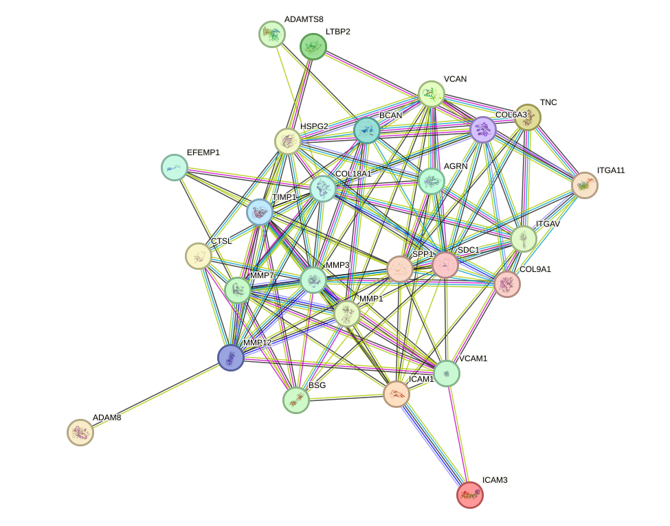
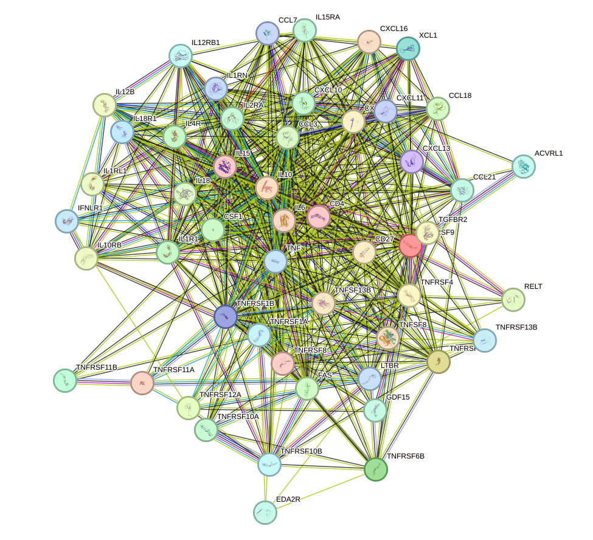
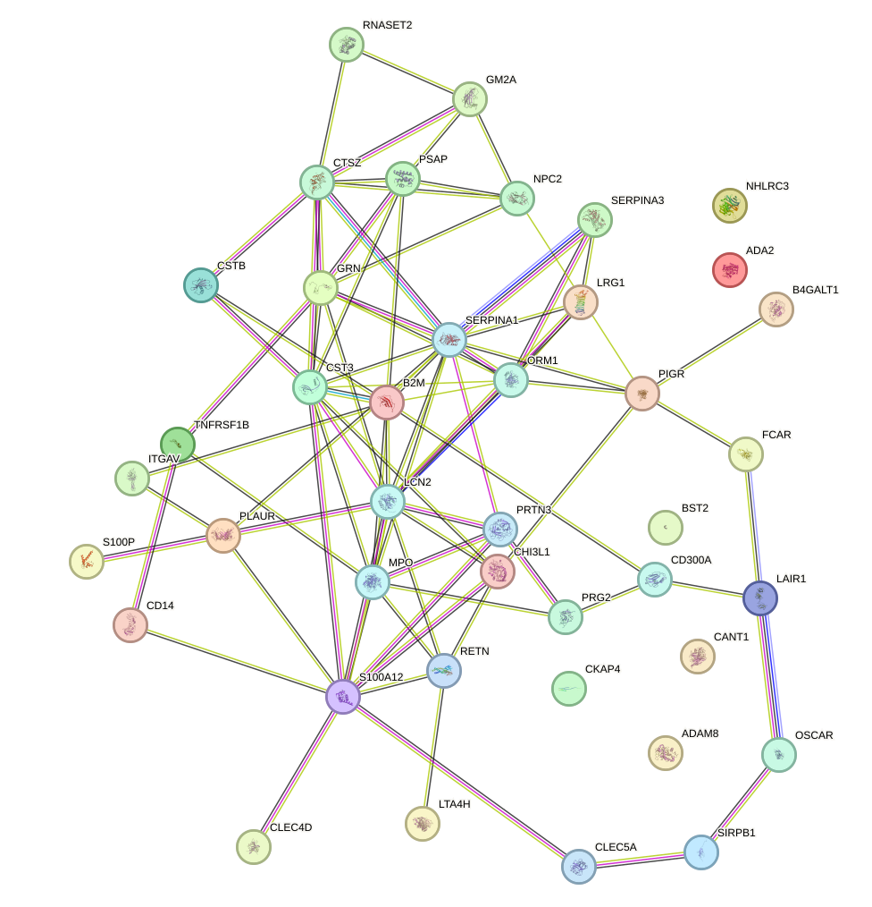
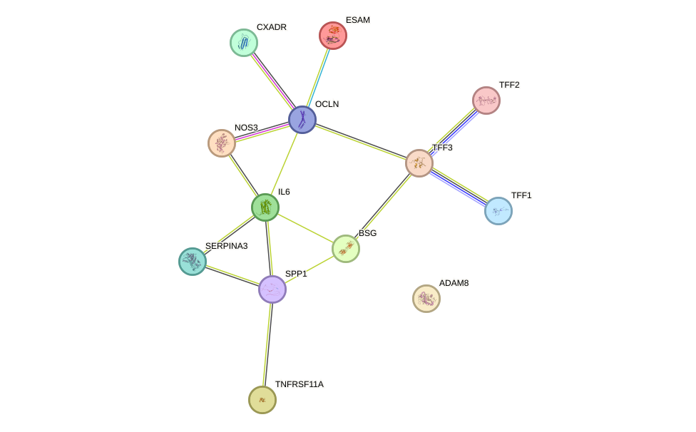
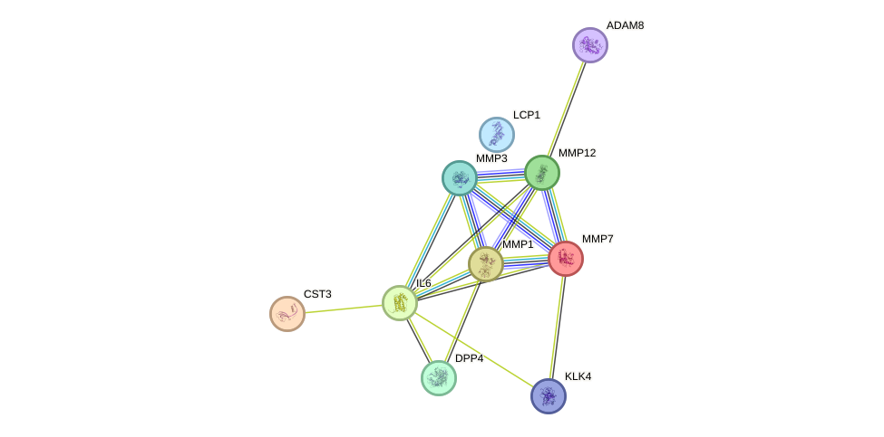
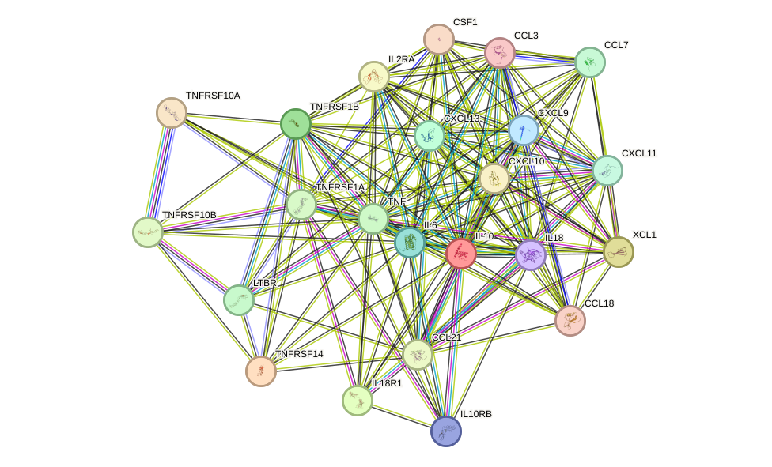

Introduction
Arthritis, a complex and heterogeneous joint disease, is characterized by persistent inflammation, pain, and progressive destruction of cartilage, synovium, and adjacent connective tissues, leading to impaired mobility and long-term functional decline (Disease code: arthritis). In a comprehensive analysis of the UK Biobank Pharma Proteomics Project data, circulating levels of 315 plasma proteins were found to be significantly associated with arthritis. This analysis included 36,678 controls and 934 cases, applying a stringent Bonferroni-corrected significance threshold of P < 1 × 10⁻⁹. Understanding the molecular mechanisms reflected by these proteins is crucial for elucidating the processes of inflammatory activation, immune-cell recruitment, and tissue-destructive remodeling that jointly contribute to arthritis pathogenesis. These insights are vital for addressing disease heterogeneity, progression, and potential avenues for diagnosis or treatment. To further explore the disease-associated molecular landscape, a comprehensive functional enrichment analysis was conducted on the 315 proteins. This analysis utilized pathway databases such as Reactome, the Kyoto Encyclopedia of Genes and Genomes (KEGG), WikiPathways, and Gene Ontology biological processes. Across these analyses, 99 significantly enriched terms were identified, highlighting a coherent disease program dominated by cytokine-mediated signaling, innate immune activation, neutrophil-associated inflammatory responses, extracellular matrix organization and disassembly, and protease-driven connective tissue remodeling. Notable pathways include cytokine-cytokine receptor interaction (51 associated proteins, P = 1.335 × 10⁻²⁸), viral protein interaction with cytokine and cytokine receptor (23 associated proteins, P = 4.223 × 10⁻¹⁵), neutrophil degranulation (41 associated proteins, P = 1.494 × 10⁻¹¹), and extracellular matrix organization (26 associated proteins, P = 2.362 × 10⁻⁷). These findings underscore the interconnected nature of inflammatory communication and structural joint remodeling in arthritis. The enrichment analysis is further supported by a literature-evidence layer, integrating 250 distinct PubMed references. Key proteins such as TNFRSF1A, TNFRSF4, RELT, TNFRSF14, and TNFRSF1B are frequently cited, reinforcing their relevance across multiple pathway sections. Additionally, the STRING protein-protein interaction network analysis retained 120 high-confidence network edges among 54 proteins, with a mean interaction score of 0.94. Proteins such as TNF, IL10, IL6, CXCL10, and CCL3 emerged as highly connected nodes, suggesting their central role in the interaction network. This network topology complements the enrichment analysis by illustrating the coordinated interaction neighborhoods formed by the associated proteins. Overall, these multi-layered analyses provide a data-supported framework for understanding arthritis as a disease where cytokine-driven inflammation, leukocyte effector responses, extracellular matrix degradation, and impaired maintenance of joint tissue integrity are tightly interconnected processes. In the following sections, we will delve deeper into the principal enriched pathways and their interaction structures to clarify how these coordinated molecular programs may contribute to arthritis development and progression. [1] [2] [3] [4] [5] [6]
Literature-Ranked Disease-Associated Proteins
Overview of the Enriched Pathways
Supporting Molecular Evidence (Table 2)
The terms below are not biological pathways and are reported separately as supporting evidence, grouped by type (phenotype associations, tissue / cell expression, disease maps, regulatory motifs, and Gene Ontology molecular function / cellular component). They are intentionally excluded from the ranked pathway network above.
Molecular Functions
| Term ID | Name | Evidence Type | Proteins | Score | p-value |
|---|---|---|---|---|---|
| GO:0030545 | signaling receptor regulator activity | GO molecular function | 53 | 0.19361996858562328 | 2.5522223280895444e-24 |
| GO:0019955 | cytokine binding | GO molecular function | 20 | 0.2645768455429768 | 2.6295828075145324e-11 |
| GO:0005201 | extracellular matrix structural constituent | GO molecular function | 17 | 0.3010894947422045 | 2.2536056855991882e-07 |
Cellular Components
| Term ID | Name | Evidence Type | Proteins | Score | p-value |
|---|---|---|---|---|---|
| GO:0042581 | specific granule | GO cellular component | 18 | 0.34014346181282074 | 8.119578430613308e-09 |
| GO:0030175 | filopodium | GO cellular component | 7 | 0.5548584733290768 | 0.0014142096764644494 |
| GO:0002102 | podosome | GO cellular component | 3 | 0.5982055575836198 | 0.03261541619229516 |
Disease Associations
| Term ID | Name | Evidence Type | Proteins | Score | p-value |
|---|---|---|---|---|---|
| KEGG:05323 | Rheumatoid arthritis | KEGG disease map | 14 | 0.09366348441515072 | 1.036273889717518e-06 |
| KEGG:05321 | Inflammatory bowel disease | KEGG disease map | 8 | 0.3020408163265306 | 0.00150298060204219 |
| KEGG:05332 | Graft-versus-host disease | KEGG disease map | 6 | 0.46071418974353767 | 0.0028348902323973037 |
Phenotype Associations
| Term ID | Name | Evidence Type | Proteins | Score | p-value |
|---|---|---|---|---|---|
| HP:0002829 | Arthralgia | Human Phenotype Ontology term | 16 | 0.33604589479992497 | 0.0015380402307864744 |
| HP:0005368 | Abnormality of humoral immunity | Human Phenotype Ontology term | 25 | 0.3503856648260829 | 0.00012175996691118126 |
| HP:0003565 | Elevated erythrocyte sedimentation rate | Human Phenotype Ontology term | 12 | 0.4176398570848589 | 0.00012175996691118126 |
Tissue / Cell Expression
| Term ID | Name | Evidence Type | Proteins | Score | p-value |
|---|---|---|---|---|---|
| HPA:0381223 | Placenta; syncytiotrophoblasts - microvilli[High] | Human Protein Atlas expression | 19 | 0.7020408163265306 | 2.3583539112050315e-06 |
| HPA:0471443 | Skin 2; fibrohistiocytic cells[High] | Human Protein Atlas expression | 25 | 0.8857142857142857 | 0.0012228078343943139 |
| HPA:0400891 | Rectum; goblet cells[≥Low] | Human Protein Atlas expression | 22 | 0.9142857142857143 | 0.001997223059486015 |
Regulatory Evidence
| Term ID | Name | Evidence Type | Proteins | Score | p-value |
|---|---|---|---|---|---|
| TF:M00194_1 | Factor: NF-kappaB; motif: NGGGGAMTTTCCNN; match class: 1 | Transcription-factor motif | 23 | 0.8122448979591836 | 0.000330259011691509 |
Drug Target / Clinical Implication Summary
Candidate drug targets
This summary uses 315 protein records, 8 displayed pathway sections, 120 retained protein-association edges, and DGIdb links for 5 genes. Open Targets evidence is not queried by this v3 generator, so no Open Targets support is claimed.
| Protein | Evidence used | Drug / targetability evidence | Interpretation status |
|---|---|---|---|
| TNFRSF1A Tumor necrosis factor receptor superfamily member 1A | HR=2.95; P=8.25e-37; 206 PubMed references extracted from displayed sections; 6 displayed pathway links; DGIdb approved drug link: Cyclophosphamide Anhydrous; retained PPI degree 8. Associated pathways include Cytokine-cytokine receptor interaction, Matrix metalloproteinases, Neutrophil degranulation, COVID 19 adverse outcome pathway, tissue homeostasis. | Cyclophosphamide Anhydrous (DGIdb: approved drug), Gsk-1995057 (DGIdb) Keyword-derived category context: Anti-inflammatory. Open Targets: not queried in this run. | Higher translational evidence |
| TNFRSF10A Tumor necrosis factor receptor superfamily member 10A | HR=2.10; P=3.08e-36; 206 PubMed references extracted from displayed sections; 6 displayed pathway links; DGIdb approved drug link: Sulindac; retained PPI degree 4. Associated pathways include Cytokine-cytokine receptor interaction, Matrix metalloproteinases, Neutrophil degranulation, COVID 19 adverse outcome pathway, tissue homeostasis. | Sulindac (DGIdb: approved drug), Mapatumumab (DGIdb) Keyword-derived category context: Anti-inflammatory. Open Targets: not queried in this run. | Higher translational evidence |
| TNFRSF1B Tumor necrosis factor receptor superfamily member 1B | HR=2.38; P=4.84e-106; 206 PubMed references extracted from displayed sections; 6 displayed pathway links; DGIdb approved drug link: Infliximab, Stavudine; retained PPI degree 3. Associated pathways include Cytokine-cytokine receptor interaction, Matrix metalloproteinases, Neutrophil degranulation, COVID 19 adverse outcome pathway, tissue homeostasis. | Infliximab (DGIdb: approved drug), Stavudine (DGIdb: approved drug) Keyword-derived category context: Anti-inflammatory. Open Targets: not queried in this run. | Higher translational evidence |
| TNFRSF4 Tumor necrosis factor receptor superfamily member 4 | HR=2.77; P=2.15e-68; 206 PubMed references extracted from displayed sections; 6 displayed pathway links; DGIdb drug-gene link: Ivuxolimab, Vonlerolizumab; retained PPI degree 4. Associated pathways include Cytokine-cytokine receptor interaction, Matrix metalloproteinases, Neutrophil degranulation, COVID 19 adverse outcome pathway, tissue homeostasis. | Ivuxolimab (DGIdb), Vonlerolizumab (DGIdb) Keyword-derived category context: Anti-inflammatory. Open Targets: not queried in this run. | Moderate translational evidence |
| LTBR Tumor necrosis factor receptor superfamily member 3 | HR=2.36; P=9.31e-19; 206 PubMed references extracted from displayed sections; 6 displayed pathway links; DGIdb drug-gene link: Hcbe-11, Baminercept Alfa; retained PPI degree 3. Associated pathways include Cytokine-cytokine receptor interaction, Matrix metalloproteinases, Neutrophil degranulation, COVID 19 adverse outcome pathway, tissue homeostasis. | Hcbe-11 (DGIdb), Baminercept Alfa (DGIdb) Keyword-derived category context: Anti-inflammatory. Open Targets: not queried in this run. | Moderate translational evidence |
| RELT Tumor necrosis factor receptor superfamily member 19L | HR=2.70; P=4.06e-27; 206 PubMed references extracted from displayed sections; 6 displayed pathway links. Associated pathways include Cytokine-cytokine receptor interaction, Matrix metalloproteinases, Neutrophil degranulation, COVID 19 adverse outcome pathway, tissue homeostasis. | No DGIdb drug-gene link retained in this run. Keyword-derived category context: Anti-inflammatory. Open Targets: not queried in this run. | Moderate mechanistic targetability signal |
Drug/pathway-level therapeutic context
- Inflammation, cytokine signaling, and immune regulation
pathways: Extracellular matrix organization, Cytokine-cytokine receptor interaction, Matrix metalloproteinases, Neutrophil degranulation; candidate proteins: TNFRSF1A, TNFRSF10A, TNFRSF1B, TNFRSF4, LTBR, RELT
This axis can support inflammation-focused target validation and comparison with immune-modulating therapeutic contexts when the disease setting makes that clinically relevant. - Vascular remodeling, extracellular matrix, and tissue structure
pathways: Extracellular matrix organization, Cytokine-cytokine receptor interaction, Matrix metalloproteinases, Neutrophil degranulation
This axis can help interpret remodeling, vascular, or matrix-related disease biology and can prioritize follow-up assays around tissue-level mechanisms. - Metabolic, lipid, endocrine, and stress-response biology
pathways: Neutrophil degranulation, tissue homeostasis
This axis can place candidate proteins into metabolic or endocrine-stress contexts, which is useful for hypothesis generation and guideline-aware comparison without implying medication choice. - Cell trafficking, secretion, endoplasmic-reticulum biology, and proteostasis
pathways: Cytokine-cytokine receptor interaction, tissue homeostasis
This axis highlights cell-state and protein-handling mechanisms that may explain why circulating protein signals converge across multiple pathways. - Barrier, epithelial, host-response, and microbial-interaction biology
pathways: Neutrophil degranulation, COVID 19 adverse outcome pathway, Viral protein interaction with cytokine and cytokine receptor
This axis is most useful as a contextual clue for barrier or host-response biology and should be treated as mechanistic interpretation, not clinical direction.
Clinical-practice caution
PubMed support for the candidate target evidence summarized here: [26] [66] [81] [249] [212] [244]
Key Enriched Pathways (Top 8)
Protein roles: Pathway members (enrichment overlap) are input proteins annotated to the pathway and are the direct evidence for its enrichment; context proteins (shown in amber and as dashed network edges) are upstream regulators, interacting partners or disease-context proteins mentioned in the narrative but not direct pathway members.
1. Extracellular matrix organization (REAC:R-HSA-1474244)
Read Context ▽
Extracellular matrix organization is the coordinated biological process that governs the synthesis, assembly, cross-linking, spatial arrangement, maintenance, and turnover of structural macromolecules such as collagens, proteoglycans, glycoproteins, and matricellular proteins that together determine the architecture and biomechanical behavior of joint tissues. In osteoarthritis genetics, extracellular matrix organization emerged as one of the major convergent biological processes enriched across hundreds of implicated effector genes, indicating that disturbance of matrix homeostasis is a core component of disease susceptibility and progression [1]. In articular cartilage, this pathway is tightly linked to chondrocyte differentiation, tissue growth, and long-term homeostasis, as shown by the finding that zinc finger and broad complex, tramtrack and bric-a-brac domain containing 20 directly regulates genes required for cartilage growth and extracellular matrix organization, and that its loss causes spontaneous osteoarthritis-like degeneration [2]. The pathway is not restricted to cartilage, because systematic evaluation of osteoarthritic joints shows that extracellular matrix composition, collagen fiber organization, calcification, and viscoelastic properties are altered across synovium, meniscus, ligaments, capsule, tendon, muscle, and fat pad, demonstrating joint-wide matrix remodeling [3]. Extracellular matrix organization is also dynamically influenced by inflammatory and reparative signals: mesenchymal stem or stromal cell-based therapies can promote chondrocyte proliferation, preserve matrix homeostasis, and suppress matrix metalloproteinase activity in osteoarthritis, while secreted factors from dental pulp stem cells are enriched in proteins linked to extracellular matrix organization and improve matrix and subchondral bone repair in temporomandibular joint osteoarthritis models [4] [5]. Mechanistically, the pathway reflects the balance between anabolic matrix deposition and catabolic degradation, since enzymes such as a disintegrin and metalloproteinase with thrombospondin motifs 4 cleave key cartilage components including cartilage oligomeric matrix protein and aggrecan, thereby disrupting structural integrity in degenerative joint disease [6].
Extracellular matrix organization is closely related to arthritis because arthritis can be viewed fundamentally as a disease of failed joint tissue homeostasis in which inflammatory, mechanical, metabolic, senescent, and developmental signals converge on matrix remodeling. In osteoarthritis, large-scale human genomics identified extracellular matrix organization as a central disease-associated process, supporting the view that inherited risk may act in part through altered assembly and maintenance of cartilage and other joint matrices [1]. At the tissue level, osteoarthritic meniscus, cartilage, and synovium share differential expression of genes involved in extracellular matrix organization, indicating that matrix dysregulation is not confined to a single compartment but instead reflects coordinated degeneration across the whole joint [7] [3]. Synovial fluid proteomics further shows that late-stage knee osteoarthritis is characterized by major shifts in proteins linked to extracellular matrix organization together with loss of normal protein co-expression structure, consistent with severe disruption of joint homeostasis [8]. In osteoarthritis synovium, extracellular matrix organization is enriched alongside fibrotic remodeling and neuro-immune signaling, suggesting that abnormal matrix remodeling may contribute not only to structural damage but also to chronic synovitis and pain-related biology [9]. Several mechanistic studies connect specific regulators of chondrocyte function to this pathway: transient receptor potential channel 1 deficiency worsens post-traumatic osteoarthritis and alters genes involved in extracellular matrix organization while promoting dedifferentiation and senescence, zinc finger and broad complex, tramtrack and bric-a-brac domain containing 20 loss disrupts matrix-organizing transcriptional programs and causes early degeneration, and caspase 1 inhibition reprograms osteoarthritis chondrocytes with suppression of extracellular matrix remodeling and matrix metalloproteinase 13 secretion [10] [2] [11]. Catabolic destruction of the matrix is also directly implicated, because a disintegrin and metalloproteinase with thrombospondin motifs 4 cleaves cartilage oligomeric matrix protein and aggrecan, thereby weakening cartilage structure in osteoarthritis [6]. Metabolic and inflammatory comorbid contexts intensify this pathway disturbance: clonal hematopoiesis of indeterminate potential is associated with incident osteoarthritis and shares enrichment in extracellular matrix organization and inflammatory pathways, while metabolic dysfunction-associated steatohepatitis with fibrosis is accompanied by downregulation of extracellular matrix organization pathways in the knee together with cartilage erosion and subchondral bone loss [12] [13]. Similar principles extend beyond osteoarthritis to inflammatory arthritis, because systems pharmacology and multi-omics analysis of celastrol in rheumatoid arthritis identified extracellular matrix organization among the dominant enriched processes in synovial cells, estradiol reduced vitronectin and secreted protein acidic and rich in cysteine signaling linked to extracellular matrix organization in rheumatoid arthritis fibroblast-like synoviocytes, and circulating proteomic studies associated rheumatoid arthritis sex differences and longer disease duration with pathways involving extracellular matrix organization and fibrosis [14] [15] [16] [17]. Collectively, these studies suggest that extracellular matrix organization may represent a unifying pathway in arthritis that links genetic susceptibility, inflammatory signaling, cellular senescence, protease activation, fibrosis, and failed repair to the progressive destruction of cartilage and other joint tissues, while also highlighting matrix-preserving interventions such as mesenchymal stem or stromal cells, dental pulp stem cell secretome, and targeted anti-inflammatory approaches as potential therapeutic strategies [1] [4] [5] [11].
Against this disease-wide background, the enrichment results for the present arthritis-associated protein set appear biologically consistent and provide a more focused network-level view of the same process.
There were 26 arthritis-associated proteins significantly enriched in the pathway of extracellular matrix organization, a process that governs matrix synthesis, assembly, cross-linking, maintenance, and turnover and has been identified as a major convergent biological process across hundreds of osteoarthritis effector genes, supporting matrix homeostasis as a central determinant of disease susceptibility and progression [1]. This enrichment is biologically consistent with evidence from articular cartilage showing that zinc finger and broad complex, tramtrack and bric-a-brac domain containing 20 directly regulates genes required for cartilage growth and extracellular matrix organization, and that loss of this regulator leads to spontaneous osteoarthritis-like degeneration [2]. The pathway also reflects joint-wide disease biology rather than cartilage-restricted change, because extracellular matrix composition, collagen fiber organization, calcification, and viscoelastic properties are altered across synovium, meniscus, ligaments, capsule, tendon, muscle, and fat pad in osteoarthritic joints [3]. In addition, extracellular matrix organization remains dynamically responsive to inflammatory and reparative signaling, as mesenchymal stem or stromal cell-based interventions preserve matrix homeostasis and suppress matrix metalloproteinase activity, while factors secreted from dental pulp stem cells are enriched in proteins linked to extracellular matrix organization and improve matrix and subchondral bone repair in temporomandibular joint osteoarthritis models [4] [5]. Mechanistically, this pathway captures the quantitative balance between anabolic deposition and catabolic degradation, including cleavage of major cartilage components such as cartilage oligomeric matrix protein and aggrecan by a disintegrin and metalloproteinase with thrombospondin motifs 4, which contributes to structural failure in degenerative joint disease [6].
Within this 26-protein set, 34 high-confidence retained protein-protein interaction edges connected 21 proteins, yielding a network retention of 80.8 percent and a mean retained interaction score of 0.887, which indicates a densely supported functional relationship structure under stringent criteria. The highest-degree proteins were tissue inhibitor of metalloproteinases 1, matrix metallopeptidase 3, and syndecan 1, each with degree 6, followed by matrix metallopeptidase 7 with degree 5 and matrix metallopeptidase 1 with degree 4; their weighted scores were 5.452, 5.299, 5.109, 4.282, and 3.839, respectively, highlighting a network centered on matrix remodeling regulators and adhesion-related proteins. The strongest retained pairs further support this interpretation, including intercellular adhesion molecule 1 with vascular cell adhesion molecule 1 at 0.999, integrin subunit alpha V with secreted phosphoprotein 1 at 0.999, matrix metallopeptidase 1 with tissue inhibitor of metalloproteinases 1 at 0.999, matrix metallopeptidase 3 with tissue inhibitor of metalloproteinases 1 at 0.999, and matrix metallopeptidase 3 with secreted phosphoprotein 1 at 0.997, while 5 proteins, namely a disintegrin and metalloproteinase 8, collagen type nine alpha 1 chain, cathepsin L, EGF containing fibulin extracellular matrix protein 1, and latent transforming growth factor beta binding protein 2, had no retained edges under the present filtering threshold.
We include the protein-protein interaction network visualization below together with the interactive STRING network page for direct inspection of the retained associations.
The enrichment analysis also highlighted several individual proteins whose known functions may help contextualize the pathway signal in arthritis-related biology.
During the function enrichment analysis, we identified serveral significant proteins. We will introduce them in-details in the following. CTSL stands out as one of the most arthritis-relevant proteins in this list because it directly regulates cell cycle progression through proteolytic processing of the CUX1 transcription factor [18]. The existence of nuclear CTSL isoforms that cleave CUX1 and alter its DNA-binding properties indicates a mechanism by which CTSL can reshape transcriptional programs controlling proliferation and cellular activation states [18]. In the context of arthritis, especially inflammatory arthritis, dysregulated proliferation and activation of synovial fibroblasts are central features of pannus formation and chronic joint damage; therefore, a protease capable of modulating nuclear transcriptional control is mechanistically notable. Although the provided annotation does not directly mention cartilage degradation, the ability of CTSL to influence cell cycle and transcription makes it highly relevant to pathogenic tissue remodeling and persistent synovial hyperplasia in arthritic disease [18].
A related but distinct perspective is provided by proteins that may connect extracellular matrix organization to growth factor signaling and cartilage cell state.
EFEMP1 is particularly interesting for arthritis because it binds epidermal growth factor receptor and induces epidermal growth factor receptor autophosphorylation with activation of downstream signaling pathways. Epidermal growth factor receptor-linked signaling is highly relevant to joint biology because it can influence synovial cell behavior, tissue repair responses, and inflammatory remodeling, making EFEMP1 a plausible modulator of arthritic pathology. EFEMP1 is also implicated in cell adhesion and migration, processes that are directly relevant to synovial invasion and the abnormal movement and retention of stromal or inflammatory cells within diseased joints. Most notably, EFEMP1 may function as a negative regulator of chondrocyte differentiation, which gives it a strong conceptual connection to arthritis because impaired chondrocyte differentiation and altered cartilage homeostasis are central to cartilage degeneration and failed repair in arthritic conditions. Taken together, EFEMP1 stands out as a protein with potential relevance to both synovial signaling and cartilage biology, two major compartments involved in arthritis.
ADAM8 is relevant to arthritis because it is implicated in leukocyte extravasation, a process that lies at the core of inflammatory joint disease. Recruitment of leukocytes from the circulation into synovial tissue and synovial fluid is a defining event in arthritis pathogenesis, particularly in rheumatoid arthritis and other inflammatory arthritides. A protein that may facilitate leukocyte extravasation is therefore potentially important in amplifying synovitis, sustaining inflammatory cytokine production, and promoting downstream tissue injury. Although the provided annotation is brief, ADAM8 stands out because it maps directly onto the immune-cell trafficking axis that drives chronic joint inflammation.
LTBP2 is potentially relevant to arthritis through its structural role in elastic-fiber organization and assembly. Although elastic fibers are not the dominant structural component of articular cartilage, connective tissue architecture is critical for the integrity of periarticular tissues, including synovium, ligaments, tendons, and the joint capsule. A molecule involved in extracellular matrix organization may therefore contribute to the biomechanical environment that influences joint stability and tissue remodeling in arthritis. LTBP2 appears less directly linked to inflammatory mechanisms than ADAM8 or CTSL, but it remains of interest as a candidate contributor to matrix dysregulation and structural tissue changes in chronic joint disease.
COL9A1 is highly relevant to arthritis because it is a structural component of hyaline cartilage, the principal tissue that undergoes degeneration in many forms of arthritis. This makes COL9A1 especially important from a tissue-integrity perspective, since disruption of cartilage matrix composition and architecture is a hallmark of both osteoarthritis and inflammatory joint destruction. Among the proteins listed, COL9A1 stands out as the most directly connected to the core anatomical substrate of arthritic damage. While the provided annotation is structural rather than mechanistic, proteins that maintain hyaline cartilage are inherently important in understanding susceptibility to cartilage breakdown, impaired resilience under mechanical stress, and progressive loss of joint function in arthritis.
Taken together, these individual examples transition naturally to the connected subnetwork, where multiple proteins appear to converge on related themes of matrix remodeling, adhesion, inflammation, and vascular change.
There are also small set of proteins function together to form a cluster. The functional profile of this 21-protein connected component is most consistent with a coordinated extracellular matrix remodeling and inflammatory adhesion program, supported by a dense high-confidence association network comprising 34 retained edges with a mean score of 0.887 and hubs centered on tissue inhibitor of metalloproteinases 1, matrix metallopeptidase 3, and syndecan 1. Multiple members directly define matrix organization and cell-matrix connectivity: tenascin C guides cell migration and is a ligand for several integrins including alpha-V-containing receptors, while also stimulating angiogenesis through endothelial elongation, migration, and sprouting [19]; versican contributes to intercellular signaling and connects cells to the extracellular matrix through hyaluronic acid binding; collagen six functions as a cell-binding protein; syndecan 1 links the cytoskeleton to the interstitial matrix [20]; and heparan sulfate proteoglycan 2 and collagen eighteen alpha 1 provide anti-angiogenic restraint, with collagen eighteen alpha 1 additionally inhibiting vascular endothelial growth factor A-driven endothelial proliferation and migration and modulating endothelial migration in an integrin-dependent manner involving integrin subunit alpha V-containing complexes [21] [22]. The cluster also contains a strong protease-control axis, in which tissue inhibitor of metalloproteinases 1 irreversibly inhibits multiple matrix metalloproteinases including matrix metallopeptidase 1, matrix metallopeptidase 3, matrix metallopeptidase 7, matrix metallopeptidase 12 and others by binding their catalytic zinc cofactor, while also acting as a growth factor that regulates differentiation, migration, cell death, and integrin signaling via CD63 molecule and integrin subunit beta 1; correspondingly, the network places tissue inhibitor of metalloproteinases 1 as the top-weighted hub and retains very high-confidence associations with matrix metallopeptidase 1 and matrix metallopeptidase 3, both with score 0.999 [23]. Matrix metallopeptidase 3 has broad substrate specificity against fibronectin, laminin, gelatins, collagens, and cartilage proteoglycans, and can activate other matrix metalloproteinases such as matrix metallopeptidase 9 after extracellular activation by the plasmin cascade, whereas matrix metallopeptidase 7 degrades fibronectin and multiple gelatin substrates and activates procollagenase, and matrix metallopeptidase 12 contributes to tissue injury and remodeling through marked elastolytic activity [24] [25]. Integrin-mediated signaling is another organizing principle of the cluster: integrin subunit alpha V recognizes arginine-glycine-aspartate-containing ligands and participates in angiogenesis and wound healing, binds osteopontin or secreted phosphoprotein 1, and supports activation of latent transforming growth factor beta 1 through alpha-V beta-6 or alpha-V beta-8 complexes [26] [27] [28]; integrin subunit alpha 11 is a collagen receptor; and secreted phosphoprotein 1 functions as a cytokine that promotes type 1 immune polarization by increasing interferon gamma and interleukin 12 while reducing interleukin 10. Consistent with this biology, one of the strongest retained network links is integrin subunit alpha V-secreted phosphoprotein 1 with score 0.999, and additional high-confidence associations connect integrin subunit alpha V with tenascin C, syndecan 1, and integrin subunit alpha 11. The inflammatory trafficking arm of the cluster is represented by intercellular adhesion molecule 1, intercellular adhesion molecule 3, and vascular cell adhesion molecule 1: intercellular adhesion molecules serve as ligands for leukocyte integrins, with intercellular adhesion molecule 3 binding lymphocyte function-associated antigen 1 and alpha-D beta-2 and contributing, together with alpha-L beta-2, to macrophage phagocytosis of apoptotic neutrophils [29] [30], while vascular cell adhesion molecule 1 is a major endothelial adhesion regulator that promotes leukocyte adhesion and transendothelial migration during inflammation and immune surveillance [31] [32] [33] [34]. Their prominence in the network is reflected by the highest-scoring retained pair intercellular adhesion molecule 1-vascular cell adhesion molecule 1 with score 0.999 and the strong intercellular adhesion molecule 1-intercellular adhesion molecule 3 association with score 0.964, which together support an integrated leukocyte recruitment module. In the context of arthritis, these combined activities are highly relevant because the cluster links inflammatory cell recruitment, matrix degradation, aberrant cell-matrix signaling, and vascular remodeling, all processes that can drive synovial inflammation and joint tissue destruction. Broad-spectrum matrix degradation by matrix metallopeptidase 3 and matrix metallopeptidase 7, together with tissue-remodeling functions of matrix metallopeptidase 12, would be expected to promote breakdown of matrix-rich connective tissues, whereas tissue inhibitor of metalloproteinases 1 indicates a compensatory but potentially insufficient inhibitory response within the same network [24] [25] [23]. Simultaneously, integrin subunit alpha V-centered signaling with tenascin C and secreted phosphoprotein 1 can support migratory, angiogenic, and immune-activating programs, and alpha-V-mediated activation of transforming growth factor beta 1 provides an additional pathway through which matrix engagement may alter tissue remodeling responses [19] [26] [27] [28]. Vascular cell adhesion molecule 1- and intercellular adhesion molecule-associated leukocyte adhesion and transmigration further suggest enhanced immune-cell entry and retention in inflamed tissue, while intercellular adhesion molecule 3-associated clearance of apoptotic neutrophils points to a linked mechanism of inflammatory resolution that may become dysregulated in chronic disease [31] [32] [33] [29] [30]. Finally, the coexistence of pro-angiogenic factors such as tenascin C and integrin subunit alpha V-linked signaling with anti-angiogenic regulators including collagen eighteen alpha 1, heparan sulfate proteoglycan 2, and a disintegrin and metalloproteinase with thrombospondin motifs 8 suggests that this cluster captures a dynamic balance between vascular expansion and restraint, a balance likely to be perturbed in arthritic tissue remodeling [19] [21]. Overall, the network evidence supports a coherent arthritis-relevant module, although the retained associations are STRING- and database-driven high-confidence protein associations and therefore should be interpreted primarily as functional connectivity rather than uniformly direct physical binding unless supported by explicit physical or experimental evidence in the retained edge annotations.

2. Cytokine-cytokine receptor interaction (KEGG:04060)
Read Context ▽
The cytokine-cytokine receptor interaction pathway comprises the extracellular signaling network formed by soluble cytokines, chemokines, colony-stimulating factors, interferons, interleukins, tumor necrosis factor family ligands, and their cognate cell-surface receptors, which together regulate leukocyte recruitment, activation, survival, differentiation, and tissue responses during immunity and inflammation [35] [36]. In transcriptomic studies of rheumatoid arthritis synovium, this pathway is repeatedly among the most significantly enriched pathways, indicating broad remodeling of inflammatory communication between immune cells, stromal cells, and vascular elements within diseased joints [35] [37] [36]. The pathway includes chemokine axes such as C-X-C motif chemokine ligand 10, C-X-C motif chemokine ligand 13, C-C motif chemokine receptor 5, C-X-C motif chemokine receptor 5, and C-C motif chemokine receptor 2, which were identified as upregulated hub components in rheumatoid arthritis synovial tissue and are linked to immune-cell trafficking and organization of inflammatory infiltrates [35]. Additional rheumatoid arthritis studies likewise identified cytokine- and receptor-related hub genes, including interleukin 6, vascular endothelial growth factor A, C-X-C chemokine receptor type 4, C-C chemokine receptor type 7, C-C chemokine receptor type 5, interleukin 15, interleukin 2 receptor subunit gamma, C-C motif chemokine ligand 5, C-X-C motif chemokine ligand 9, and C-X-C motif chemokine ligand 10, further supporting the centrality of this pathway in synovial inflammation [36] [38] [37]. Beyond rheumatoid arthritis, enrichment of this pathway has also been observed in osteoarthritis synovium, osteoarthritis cartilage, and experimental osteoarthritis models, where it is associated with synovial inflammation, macrophage infiltration, cartilage degeneration, and altered responses to mechanical and inflammatory stimuli [39] [40] [41] [42]. In gouty arthritis, transcriptomic and validation studies showed that modulation of this pathway accompanies suppression of interleukin 1 beta, tumor necrosis factor alpha, interleukin 6, caspase 1, and related inflammatory mediators, indicating that the pathway also participates in crystal-induced acute joint inflammation [43]. Taken together, these findings suggest that the cytokine-cytokine receptor interaction pathway may be viewed as a broad intercellular communication framework that integrates innate immunity, adaptive immunity, stromal activation, and tissue remodeling across multiple forms of arthritis [43] [35] [39].
Against this biological background, the enrichment statistics from the present analysis are consistent with the broader literature. There were 51 arthritis-associated proteins significantly enriched in the cytokine-cytokine receptor interaction pathway, a central intercellular signaling framework that coordinates leukocyte recruitment, activation, survival, differentiation, and tissue responses during immunity and inflammation [35] [36]. This enrichment is consistent with repeated transcriptomic observations across rheumatoid arthritis, osteoarthritis, and gouty arthritis, in which this pathway is among the most significantly altered inflammatory communication programs and includes multiple disease-linked cytokines, chemokines, and receptors such as interleukin 6, vascular endothelial growth factor A, interleukin 15, interleukin 2 receptor subunit gamma, C-X-C motif chemokine ligand 9, C-X-C motif chemokine ligand 10, C-X-C motif chemokine ligand 13, C-C motif chemokine receptor 2, C-C chemokine receptor type 5, and C-X-C chemokine receptor type 4 [35] [37] [36] [38] [39] [40] [41] [42] [43].
To further characterize how these proteins may relate to one another functionally, network structure was examined under high-confidence association criteria. Within this 51-protein set, 171 high-confidence protein-protein association edges were retained, connecting 47 proteins, which corresponds to 92.2 percent of the pathway proteins, with a mean retained interaction score of 0.894. Network centrality was led by tumor necrosis factor with degree 27 and weighted score 24.527, followed by cluster of differentiation 4 with degree 20 and weighted score 17.184, interleukin 10 with degree 19 and weighted score 17.697, interleukin 6 with degree 19 and weighted score 17.44, and tumor necrosis factor receptor superfamily member 1A with degree 15 and weighted score 13.207, supporting a densely connected inflammatory core. The dominant connected component contained 47 proteins and all 171 retained edges, whereas 4 proteins, namely ectodysplasin A2 receptor, receptor expressed in lymphoid tissues, tumor necrosis factor receptor superfamily member 6B, and tumor necrosis factor receptor superfamily member 9, had no retained edges under the present high-confidence criteria. The strongest retained associations reached a score of 0.999 and included interleukin 15 with interleukin 15 receptor subunit alpha, tumor necrosis factor receptor superfamily member 13B with tumor necrosis factor superfamily member 13B, tumor necrosis factor receptor superfamily member 1A with tumor necrosis factor receptor superfamily member 1B, tumor necrosis factor receptor superfamily member 8 with tumor necrosis factor superfamily member 8, C-C motif chemokine ligand 21 with C-X-C motif chemokine ligand 9, C-C motif chemokine ligand 21 with C-X-C motif chemokine ligand 10, C-X-C motif chemokine ligand 10 with C-X-C motif chemokine ligand 11, and C-X-C motif chemokine ligand 10 with C-X-C motif chemokine ligand 9; these are high-confidence functional associations and should not be over-interpreted as direct physical binding in every case.
EDA2R stands out as potentially relevant to arthritis because it directly engages two signaling pathways that are central to inflammatory joint disease: nuclear factor kappa-light-chain-enhancer of activated B cells and c-Jun N-terminal kinase. Activation of EDA2R by EDA-A2 mediates nuclear factor kappa-light-chain-enhancer of activated B cells and c-Jun N-terminal kinase pathway signaling, and this appears to involve TNF receptor-associated factor 3 and TNF receptor-associated factor 6, adaptor proteins that are broadly linked to cytokine and innate immune signaling. In the context of arthritis, these pathways are highly relevant because nuclear factor kappa-light-chain-enhancer of activated B cells and c-Jun N-terminal kinase drive expression of inflammatory mediators, matrix-degrading enzymes, and stress-response programs that contribute to synovial inflammation and cartilage damage. Although the provided annotation does not directly describe an arthritis-specific study, the combination of receptor-mediated nuclear factor kappa-light-chain-enhancer of activated B cells and c-Jun N-terminal kinase activation and TNF receptor-associated factor engagement makes EDA2R a plausible upstream modulator of inflammatory tissue remodeling in arthritic joints.
In a related but somewhat distinct way, RELT may also be of interest because it connects apoptosis-related biology with stress-activated mitogen-activated protein kinase signaling. RELT has been reported to play a role in apoptosis [52] [53], and when overexpressed it induces activation of the mitogen-activated protein kinase 14 and mitogen-activated protein kinase 8 cascades [54]. These functions are potentially meaningful in arthritis because both mitogen-activated protein kinase 14 and mitogen-activated protein kinase 8 are well-established inflammatory signaling axes that promote cytokine production, synovial activation, and tissue-destructive responses, while dysregulated apoptosis can influence persistence of inflammatory cells or loss of structural cells within the joint. The additional role of RELT in dental enamel formation is less directly relevant to arthritis, but it may indicate broader functions in mesenchymal or ectodermal tissue biology that could intersect with joint tissue maintenance [55]. Overall, RELT stands out as a plausible contributor to arthritis-related pathology through mitogen-activated protein kinase-driven inflammatory signaling and apoptosis control [52] [53] [54].
A similarly cautious interpretation applies to TNFRSF6B, which appears potentially relevant to arthritis because it combines immune activation, nuclear factor kappa-light-chain-enhancer of activated B cells signaling, apoptosis-related effects, and regulation of angiogenesis. It mediates activation of nuclear factor kappa-light-chain-enhancer of activated B cells, a master inflammatory pathway that drives cytokine production and survival programs in many forms of inflammatory arthritis. It also inhibits vascular endothelial growth and angiogenesis in vitro, a feature that could be important because pathological angiogenesis contributes to synovial expansion and leukocyte recruitment in arthritic joints. In addition, TNFRSF6B promotes activation of caspases and apoptosis by similarity, suggesting a potential role in controlling survival of immune or stromal cells that shape chronic inflammation. Its ability to promote splenocyte alloactivation further supports a role in amplifying immune responses. Taken together, TNFRSF6B appears to be a multifunctional regulator with plausible relevance to synovial inflammation, immune-cell activation, vascular remodeling, and tissue turnover in arthritis.
Finally, TNFRSF9 may be relevant to arthritis because it strengthens T-cell survival and effector function, processes that can be beneficial in host defense but may also exacerbate immune-mediated tissue injury when dysregulated. As a receptor for TNFSF9/4-1BBL, TNFRSF9 enhances cluster of differentiation 8-positive T-cell survival, cytotoxicity, and mitochondrial activity, thereby promoting immune responses against viruses and tumors. In an arthritis setting, this type of costimulatory signaling may be important because persistent activation and survival of lymphocytes can sustain synovial inflammation and amplify local cytokine networks. Although the supplied annotation emphasizes antiviral and antitumor immunity rather than joint disease specifically, TNFRSF9 stands out as an immune-potentiating receptor whose biology is highly compatible with mechanisms of chronic inflammatory arthritis.
Beyond these individually discussed proteins, there is also a small set of proteins that function together to form a cluster. The cluster is a single highly connected component comprising 47 proteins and 171 retained high-confidence associations with a mean retained score of 0.894, indicating a coherent functional module rather than a set of isolated signals. Its highest-degree nodes, particularly tumor necrosis factor, cluster of differentiation 4, interleukin 10, interleukin 6, and tumor necrosis factor receptor superfamily member 1A, place inflammatory cytokine signaling, lymphocyte regulation, and death-receptor pathways at the center of the network. Several of the strongest retained associations correspond to known receptor-ligand or receptor-coreceptor relationships, including interleukin 15-interleukin 15 receptor subunit alpha, interleukin 10-interleukin 10 receptor subunit beta, interferon lambda receptor 1-interleukin 10 receptor subunit beta, interleukin 18-interleukin 18 receptor 1, tumor necrosis factor receptor superfamily member 1A-tumor necrosis factor receptor superfamily member 1B, tumor necrosis factor receptor superfamily member 8-tumor necrosis factor superfamily member 8, and tumor necrosis factor receptor superfamily member 13B-tumor necrosis factor superfamily member 13B, supporting functional coupling within the cluster under the current STRING-based retained-edge criteria. Because these are STRING associations, they should be interpreted as high-confidence functional associations unless the evidence explicitly includes physical support, and even then not all edges should be over-interpreted as direct binary binding events. Functionally, the module combines inflammatory amplification with immune restraint. Interleukin 10 receptor subunit alpha signaling limits excessive tissue disruption caused by inflammation through Janus kinase 1 and tyrosine kinase 2-dependent signal transducer and activator of transcription 3 activation and induction of anti-inflammatory genes, while interleukin 10 receptor subunit beta acts as a required shared receptor subunit for interleukin 10-family and type three interferon signaling, linking anti-inflammatory and antiviral programs [56] [57] [58]. In parallel, interleukin 18 binding to interleukin 18 receptor 1 promotes pro-inflammatory signaling and contributes to interferon gamma synthesis from type 1 helper T cells, while interleukin 18 also synergizes with interleukin 12 to induce interferon gamma production by type 1 helper T cells and natural killer cells, favoring a type 1 inflammatory environment [59] [60] [61] [62]. Interleukin 15 further strengthens this immune-activating arm by stimulating proliferation of natural killer cells, T cells, and B cells and by activating Janus kinase 1 and Janus kinase 3 with downstream signal transducer and activator of transcription 3 and signal transducer and activator of transcription 5 phosphorylation; its very strong retained association with interleukin 15 receptor subunit alpha is concordant with the established high-affinity interleukin 15 receptor system and trans-presentation biology [63] [64] [65] [66] [67] [68] [69] [70]. The chemokine-rich portion of the cluster indicates coordinated leukocyte trafficking. C-X-C motif chemokine ligand 10 is a pro-inflammatory chemokine that recruits and activates peripheral immune cells, especially during inflammatory or antiviral states, through C-X-C motif chemokine receptor 3-dependent signaling and type 1 helper T-cell recruitment, while C-X-C motif chemokine ligand 11 is chemotactic for interleukin-activated T cells and C-X-C motif chemokine ligand 13 is chemotactic for B lymphocytes via C-X-C motif chemokine receptor 5 [71] [72] [73] [74] [75]. C-C motif chemokine ligand 21 preferentially attracts naive and activated T cells and mediates lymphocyte homing to secondary lymphoid organs, C-C motif chemokine ligand 18 attracts naive, cluster of differentiation 4-positive, and cluster of differentiation 8-positive T cells and may support B-cell migration into follicles, X-C motif chemokine ligand 1 promotes thymic dendritic-cell accumulation and contributes to regulatory T-cell development, and C-X-C motif chemokine ligand 16 induces a strong chemotactic response while also acting as a scavenger receptor on macrophages for oxidized low-density lipoprotein [60] [61]. These coordinated trafficking cues are consistent with the very strong retained associations among C-C motif chemokine ligand 21, C-X-C motif chemokine ligand 9, C-X-C motif chemokine ligand 10, C-X-C motif chemokine ligand 11, and X-C motif chemokine ligand 1, which support a shared inflammatory recruitment program under the current network criteria. Tumor necrosis factor superfamily signaling is another major axis in the cluster and is highly relevant to tissue inflammation and cell fate. Tumor necrosis factor receptor superfamily member 1B regulates nuclear factor kappa-light-chain-enhancer of activated B cells and c-Jun N-terminal kinase activation and cell survival or apoptosis through TNF receptor-associated factor 1 and TNF receptor-associated factor 2-containing ubiquitin ligase complexes, while tumor necrosis factor receptor superfamily member 1A serves as a receptor for tumor necrosis factor alpha and can recruit Fas-associated death domain protein and caspase 8 to initiate apoptotic signaling; the top-scoring tumor necrosis factor receptor superfamily member 1A-tumor necrosis factor receptor superfamily member 1B and tumor necrosis factor-tumor necrosis factor receptor superfamily member 1A or tumor necrosis factor receptor superfamily member 1B associations therefore place tumor necrosis factor receptor signaling at the center of the module [76]. Additional tumor necrosis factor family members broaden this regulatory space: tumor necrosis factor receptor superfamily member 14 integrates stimulatory and inhibitory signals from LIGHT, B and T lymphocyte attenuator, cluster of differentiation 160, and lymphotoxin alpha to regulate T-cell costimulation, natural killer-cell interferon gamma production, epithelial inflammatory responses, and maintenance of T-cell resting state versus effector survival [77] [78] [79] [80]. Tumor necrosis factor receptor superfamily member 4-associated ubiquitin signaling regulates nuclear factor kappa-light-chain-enhancer of activated B cells, c-Jun N-terminal kinase, cell survival, apoptosis, mechanistic target of rapamycin complex assembly, and antibody isotype switching, whereas tumor necrosis factor receptor superfamily member 8-tumor necrosis factor superfamily member 8 signaling promotes T-cell proliferation and nuclear factor kappa-light-chain-enhancer of activated B cells activation [81] [82] [83] [84] [85] [86] [87] [88] [89] [90] [91] [92] [93] [94] [95] [96]. The cluster also contains multiple pathways that can influence myeloid-cell persistence and stromal responses. Colony stimulating factor 1 receptor signaling supports survival, proliferation, and differentiation of mononuclear phagocytes, promotes release of pro-inflammatory chemokines, activates extracellular signal-regulated kinase 1 and extracellular signal-regulated kinase 2, c-Jun N-terminal kinase, phosphatidylinositol 3-kinase and protein kinase B, SRC-family kinases, and signal transducer and activator of transcription 3 and signal transducer and activator of transcription 5, and is also required for osteoclast proliferation and differentiation [63]. Interleukin 6 trans-signaling through soluble interleukin 6 receptor extends interleukin 6 responsiveness to cells lacking membrane interleukin 6 receptor and is described as causative for the pro-inflammatory properties of interleukin 6 and important in chronic inflammatory disease, while also inducing vascular endothelial growth factor production and supporting tissue regeneration [97] [98]. Transforming growth factor beta receptor signaling through transforming growth factor beta receptor 2 and transforming growth factor beta receptor 1 regulates immunosuppression, extracellular matrix production, wound healing, and non-canonical TNF receptor-associated factor 6-mitogen-activated protein kinase kinase kinase 7 signaling, indicating a plausible link between inflammatory control and structural tissue remodeling within the same module [99]. A particularly arthritis-relevant feature of the cluster is its integration of osteoclastogenic and bone-remodeling signals. The supplied function for tumor necrosis factor receptor superfamily member 11B describes the receptor activator of nuclear factor kappa-light-chain-enhancer of activated B cells ligand-receptor activator of nuclear factor kappa-light-chain-enhancer of activated B cells axis as an osteoclast differentiation and activation system that induces long-lasting intracellular calcium oscillations, nuclear factor of activated T cells 1 activation, osteoclast-specific transcription, and cAMP response element-binding protein 1 and mitochondrial reactive oxygen species-dependent osteoclast generation, while also modulating dendritic-cell and T-cell interactions [100]. Colony stimulating factor 1 receptor is likewise required for osteoclast proliferation and differentiation and for regulation of bone resorption, providing a second myeloid-osteoclast input into the same inflammatory network. In arthritis, this combination of chemokine-driven leukocyte recruitment, tumor necrosis factor, interleukin 18, and interleukin 15-mediated inflammatory activation, macrophage and dendritic-cell support, and osteoclastogenic signaling would be expected to favor persistent synovial inflammation together with accelerated bone erosion and tissue damage, whereas interleukin 10-interleukin 10 receptor subunit beta and transforming growth factor beta pathways represent endogenous counter-regulatory mechanisms that may be insufficient to fully restrain pathology [56] [57] [58] [97] [100] [99]. Overall, the network is therefore most consistent with a coordinated immunoregulatory and osteo-inflammatory cluster that could contribute to arthritis by promoting immune-cell influx, type 1 helper T cell, natural killer cell, and T-cell activation, cytokine amplification, synovial myeloid-cell survival, angiogenic and tissue-remodeling responses, and osteoclast-mediated bone destruction, while simultaneously containing built-in anti-inflammatory and immunosuppressive nodes.

3. Matrix metalloproteinases (WP:WP129)
Read Context ▽
Matrix metalloproteinases are a family of calcium-dependent and zinc-dependent proteolytic enzymes that cleave extracellular matrix components and thereby regulate tissue remodeling under physiological and pathological conditions [101] [102]. These enzymes are synthesized as inactive precursor forms and require post-translational activation, after which their activity is restrained by tissue inhibitors of metalloproteinases, so their biological effect depends on the balance between enzyme activation and inhibition rather than on expression alone [103] [104]. In joints, matrix metalloproteinases degrade proteoglycans, collagens, and other extracellular matrix molecules, and they can also influence inflammation indirectly through cleavage of cytokines, receptors, and other signaling-related substrates [103]. Different members of this family contribute to distinct aspects of joint pathology, with matrix metalloproteinase-1, matrix metalloproteinase-3, matrix metalloproteinase-9, and matrix metalloproteinase-13 repeatedly implicated in cartilage and synovial matrix degradation across arthritic diseases [101] [105] [106]. Among these enzymes, matrix metalloproteinase-13 has been highlighted as a major collagen-degrading enzyme in osteoarthritis and a key driver of type two collagen loss and progressive cartilage destruction [103] [105] [107]. In rheumatoid arthritis, matrix metalloproteinases are produced prominently by fibroblast-like synovial cells and other synovial stromal cells, where their expression is shaped by inflammatory cytokines, oxidative stress, epigenetic dysregulation, and transcriptional programs linked to pathogenic fibroblast activation [108] [109] [110]. Thus, the matrix metalloproteinase pathway is best understood as a proteolytic network that integrates inflammatory signaling, stromal cell activation, extracellular matrix breakdown, and inhibitor control to determine whether joint remodeling remains adaptive or becomes destructive in arthritis [103] [104].
This mechanistic framework provides a direct basis for understanding why the pathway is so closely linked to arthritis across multiple disease settings. The matrix metalloproteinase pathway is centrally related to arthritis because excessive proteolysis of cartilage, synovium, and periarticular matrix is a common mechanism underlying structural joint damage across rheumatoid arthritis, osteoarthritis, and spondyloarthritis [103] [106] [101]. In rheumatoid arthritis, activated fibroblast-like synovial cells adopt a tissue-destructive phenotype characterized by increased production of matrix metalloproteinases, which directly promotes cartilage erosion and works in parallel with receptor activator of nuclear factor kappa-B ligand-driven bone damage [109] [110]. This destructive program is amplified by inflammatory mediators, including interleukin-1 beta, tumor necrosis factor alpha, interleukin-17A, granulocyte macrophage colony-stimulating factor, and adiponectin isoforms, all of which induce matrix metalloproteinase expression in synovial tissues or fibroblast-like synovial cells and thereby intensify matrix degradation and joint pathology [111] [112] [113]. Regulatory pathways that suppress inflammation, such as nuclear receptor subfamily 1 group D member 1 signaling, reduce matrix metalloproteinase expression together with inhibition of mitogen-activated protein kinase and nuclear factor kappa-B signaling, and this is accompanied by attenuation of synovial hyperplasia and cartilage and bone destruction in experimental rheumatoid arthritis [108]. Micro ribonucleic acid-mediated and epigenetic mechanisms also contribute to persistent matrix metalloproteinase activation in rheumatoid arthritis synovial fibroblasts, supporting the idea that matrix metalloproteinase overproduction is not merely a secondary consequence of inflammation but part of a stable pathogenic stromal phenotype [114] [110]. In osteoarthritis, matrix metalloproteinase-13 produced by chondrocytes is especially important, often in the context of mechanical overload, because it accelerates type two collagen degradation and progressive cartilage loss, making this enzyme a major candidate therapeutic target [103] [105] [107]. In spondyloarthritis, increased circulating matrix metalloproteinase-3 and other matrix metalloproteinases correlate with disease activity, structural progression, and response to tumor necrosis factor inhibitor treatment, indicating that this pathway is not only pathogenic but also clinically informative as a biomarker axis [106] [115]. Consistent with this translational relevance, synovial fluid matrix metalloproteinase-9 is increased in early erosive rheumatoid arthritis and correlates with radiographic progression and anti-citrullinated protein antibody levels, showing that local matrix metalloproteinase activity reflects aggressive joint-destructive disease behavior [116]. Collectively, the publications indicate that the matrix metalloproteinase pathway links inflammatory signaling to irreversible extracellular matrix destruction, drives cartilage and bone damage through stromal and immune cell interactions, and represents both a biomarker system and a therapeutic target for arthritis stratification and intervention [103] [109] [106].
Against this biological background, the enrichment result can be interpreted more coherently in light of the known centrality of matrix remodeling in arthritis. There were 7 arthritis-associated proteins analyzed in the function enrichment analysis for the pathway describing matrix metalloproteinases as calcium-dependent and zinc-dependent proteolytic enzymes that cleave extracellular matrix components and regulate tissue remodeling under physiological and pathological conditions [101] [102]. In the context of arthritis, this enrichment is biologically consistent with the established role of matrix metalloproteinases in degrading proteoglycans, collagens, and other extracellular matrix molecules, while also modulating inflammatory signaling through cleavage of cytokines, receptors, and related substrates; these effects are further shaped by the balance between post-translational enzyme activation and inhibition by tissue inhibitors of metalloproteinases rather than by expression alone [103] [104]. The pathway description is also concordant with prior evidence that matrix metalloproteinase-1, matrix metalloproteinase-3, matrix metalloproteinase-9, and matrix metalloproteinase-13 are repeatedly implicated in cartilage and synovial matrix degradation across arthritic diseases, with matrix metalloproteinase-13 particularly emphasized as a major collagen-degrading enzyme in osteoarthritis and a driver of type two collagen loss and progressive cartilage destruction, whereas in rheumatoid arthritis matrix metalloproteinases are prominently produced by fibroblast-like synovial cells and other synovial stromal cells under the influence of inflammatory cytokines, oxidative stress, epigenetic dysregulation, and pathogenic transcriptional programs [101] [105] [106] [103] [105] [107] [108] [109] [110].
A network-level view further supports the internal coherence of this enrichment set, while still warranting cautious interpretation of the interaction evidence. The retained protein-protein interaction network contained 10 high-confidence edges among all 7 proteins, indicating that 100.0 percent of analyzed proteins remained connected under the current confidence filter. The network formed a single connected component of 7 proteins and 10 edges, with a mean retained interaction score of 0.909, supporting a dense and internally coherent association structure for this enriched pathway. The highest-degree proteins were matrix metalloproteinase-3 with degree 5 and weighted score 4.388, tissue inhibitor of metalloproteinases-1 with degree 4 and weighted score 3.846, and matrix metalloproteinase-1 with degree 4 and weighted score 3.839, followed by matrix metalloproteinase-7 with degree 3 and weighted score 2.590 and matrix metalloproteinase-12 with degree 2 and weighted score 1.687. The strongest retained pairs were matrix metalloproteinase-1 with tissue inhibitor of metalloproteinases-1 at 0.999, matrix metalloproteinase-3 with tissue inhibitor of metalloproteinases-1 at 0.999, matrix metalloproteinase-1 with matrix metalloproteinase-3 at 0.985, basigin with matrix metalloproteinase-1 at 0.977, matrix metalloproteinase-7 with tissue inhibitor of metalloproteinases-1 at 0.925, matrix metalloproteinase-12 with tissue inhibitor of metalloproteinases-1 at 0.923, matrix metalloproteinase-1 with matrix metalloproteinase-7 at 0.878, and matrix metalloproteinase-3 with tumor necrosis factor at 0.853; taken together, these values quantitatively support a network centered on coordinated protease activity, inhibitor control, and inflammatory association, while the retained evidence should be interpreted as high-confidence protein associations rather than over-stated as direct physical binding in every case.
To complement these quantitative network properties, the visualization below provides a more intuitive view of the connected structure. We include the protein-protein interaction network visualization below together with the interactive STRING network page.
This visual pattern also suggests that a smaller functional grouping may be present within the broader connected network. There are also small set of proteins function together to form a cluster. The cluster is most consistently interpreted as a matrix-remodeling and inflammatory-response module composed of proteases that degrade extracellular matrix components, a cognate inhibitor that restrains metalloproteinase activity, and associated inflammatory or cell-interaction proteins. Matrix metalloproteinase-7 degrades casein, fibronectin, and multiple gelatin substrates and can activate procollagenase, indicating a role in amplification of proteolytic remodeling. Matrix metalloproteinase-3 has broad substrate specificity against fibronectin, laminin, gelatins, collagens, and cartilage proteoglycans, and it can activate other matrix metalloproteinases, including matrix metalloproteinase-9, further supporting a protease cascade. Matrix metalloproteinase-12 is implicated in tissue injury and remodeling and has marked elastolytic activity. Tissue inhibitor of metalloproteinases-1 counterbalances this proteolytic axis by forming one-to-one inhibitory complexes with multiple metalloproteinases, including matrix metalloproteinase-1, matrix metalloproteinase-3, matrix metalloproteinase-7, and matrix metalloproteinase-12, through binding of their catalytic zinc cofactor. In parallel, matrix metalloproteinase-1 is described as a regulator of extracellular matrix remodeling, cell migration, proliferation, and differentiation, and it promotes remodeling by up-regulating collagenases including matrix metalloproteinase-1, matrix metalloproteinase-2, and matrix metalloproteinase-13, thereby facilitating cell migration and tumor cell invasion [23].
4. Neutrophil degranulation (REAC:R-HSA-6798695)
Read Context ▽
Neutrophil degranulation is a core innate immune effector pathway in which neutrophils, after activation by inflammatory cytokines, immune complexes, microbial products, or tissue-derived danger signals, mobilize intracellular granules and secretory vesicles to the cell surface and release preformed antimicrobial and inflammatory mediators into the extracellular space [117] [118]. This process delivers enzymes such as myeloperoxidase, neutrophil elastase, lysozyme, and calcium-binding inflammatory proteins, together with factors that amplify reactive oxygen species generation, proteolysis, cytokine processing, and leukocyte recruitment [117] [119] [120]. In arthritis-related settings, pathway-level analyses repeatedly identify neutrophil degranulation among the most enriched biological programs in rheumatoid arthritis, juvenile idiopathic arthritis, systemic juvenile idiopathic arthritis, psoriatic arthritis, gout, and polyarticular juvenile idiopathic arthritis, indicating that it is not an isolated event but a recurring inflammatory module across multiple arthritic diseases [118] [121] [122] [123] [124] [125] [126]. Degranulation is functionally linked to oxidative burst and neutrophil extracellular trap biology, because activated neutrophils in arthritis show coordinated upregulation of degranulation-associated proteins, reactive oxygen species metabolism, and extracellular trap-related programs [117] [118]. The pathway is also dynamically regulated by the inflammatory microenvironment and by therapy, as tumor necrosis factor blockade suppresses neutrophil degranulation signatures in juvenile idiopathic arthritis, while synovial fluid components such as hyaluronic acid can restrain degranulation responses in spondyloarthritis [122] [127]. Thus, neutrophil degranulation represents a biologically important interface between neutrophil activation, mediator release, oxidative stress, and tissue injury in inflammatory joint disease [117] [118] [119].
Against this biological background, the enrichment results from the present protein set fit well with the broader literature. There were 41 arthritis-associated proteins significantly enriched in the pathway of neutrophil degranulation, a recurrent inflammatory program across multiple forms of inflammatory joint disease in which activated neutrophils release preformed antimicrobial and inflammatory mediators that intensify oxidative stress, proteolysis, cytokine processing, and leukocyte recruitment [117] [118]. This enrichment is consistent with prior pathway-level observations showing repeated overrepresentation of neutrophil degranulation in rheumatoid arthritis, juvenile idiopathic arthritis, systemic juvenile idiopathic arthritis, psoriatic arthritis, gout, and polyarticular juvenile idiopathic arthritis, supporting the interpretation that this pathway represents a shared disease module rather than an isolated event [118] [121] [122] [123] [124] [125] [126].
To refine this pathway-level observation, the retained association network provides a more selective view of how these proteins may relate to one another. Within this 41-protein set, 16 high-confidence protein-protein association edges were retained, linking 21 of 41 proteins, which corresponds to 51.2 percent network coverage among proteins and yields a mean retained association score of 0.853. The most connected proteins were myeloperoxidase with degree 4 and weighted score 3.275, cystatin C with degree 3 and weighted score 2.729, serpin family A member 1 with degree 3 and weighted score 2.570, orosomucoid 1 with degree 2 and weighted score 1.897, and proteinase 3 with degree 2 and weighted score 1.837. The retained network was organized into 4 connected components, with the largest component containing 7 proteins and 7 edges at a mean score of 0.859, followed by components of 5 proteins and 4 edges at a mean score of 0.883, 3 proteins and 2 edges at a mean score of 0.820, and 2 proteins with 1 edge at a mean score of 0.759. The strongest retained protein pair was myeloperoxidase-proteinase 3 with a score of 0.999, followed by orosomucoid 1-serpin family A member 1 at 0.979, beta-2-microglobulin-cystatin C at 0.950, cystatin C-lipocalin 2 at 0.924, and orosomucoid 1-serpin family A member 3 at 0.918. Notably, 20 of 41 proteins, or 48.8 percent, had no retained edges under the current high-confidence criteria, indicating that the observed network is selective rather than uniformly dense.
To facilitate visual inspection of these retained associations, we include the network representation below together with the corresponding external resource. We include the protein-protein interaction network visualization below together with the corresponding STRING network page for interactive inspection of the retained high-confidence associations.
Having outlined the pathway-level enrichment and the overall network structure, the next section introduces the individual proteins that appeared significant in the functional enrichment analysis. During the function enrichment analysis, we identified serveral significant proteins. We will introduce them in-details in the following.
CD14 is one of the most arthritis-relevant proteins in this list because it sits at the interface between microbial sensing and inflammatory cytokine production, two processes strongly implicated in synovitis and disease flares. CD14 binds monomeric lipopolysaccharide together with LBP and transfers it to the LY96/TLR4 complex, thereby initiating innate immune activation [130]. This signaling proceeds through MyD88, TIRAP, and TRAF6 to activate NF-kappa-B and induce cytokine secretion and inflammation [131] [132]. CD14 also functions with TLR2-containing complexes in response to diacylated and triacylated lipopeptides and participates in responses to mycobacterial lipoproteins, indicating that it can amplify inflammatory responses to a broad range of pathogen-derived ligands relevant to infection-triggered or microbiome-associated arthritis mechanisms [133]. In the context of arthritis, these activities are highly relevant because excessive TLR-driven activation of monocytes, macrophages, and antigen-presenting cells can promote TNF, IL-1, and other mediators that sustain synovial inflammation and joint damage.
Closely related to this inflammatory signaling theme, TNFRSF1B is especially important for arthritis because tumor necrosis factor signaling is a central pathogenic axis in inflammatory joint disease. TNFRSF1B regulates activation of NF-kappa-B and JNK and thereby influences inflammatory gene expression programs that are highly relevant to chronic synovitis. It also plays a role in the regulation of cell survival and apoptosis, processes that can determine the persistence of activated immune cells and synovial stromal cells within inflamed joints. In addition, the TRAF1/TRAF2 complex associated with TNFRSF1B forms part of an E3 ubiquitin ligase machinery that promotes ubiquitination of signaling targets such as MAP3K14, while also recruiting the antiapoptotic ligases BIRC2 and BIRC3 to TNFRSF1B/TNFR2, supporting sustained prosurvival signaling (By similarity). Taken together, these functions make TNFRSF1B highly relevant to arthritis pathogenesis because they can reinforce inflammatory signaling while limiting the resolution of pathogenic cellular infiltrates.
Moving from cytokine receptor signaling to cell-matrix communication, ITGAV stands out because it links extracellular matrix recognition, leukocyte-stromal interactions, tissue remodeling, and transforming growth factor beta activation, all of which are central features of arthritic joints. Alpha-V integrins bind a broad range of matrix and matricellular ligands through RGD-dependent recognition, supporting adhesive and migratory interactions in damaged tissue environments [26] [27]. These integrins may contribute to angiogenesis and wound healing, processes that parallel the abnormal neovascularization and reparative-fibrotic remodeling seen in inflamed synovium [27]. Particularly relevant to arthritis, alpha-V/beta-6 or alpha-V/beta-8 mediates release of transforming growth factor beta-1 from latency-associated peptide, thereby playing a key role in transforming growth factor beta-1 activation [26] [28]. Because transforming growth factor signaling can shape fibroblast activation, immune regulation, and tissue fibrosis, ITGAV-containing complexes may influence both destructive and remodeling phases of joint disease.
Along a related axis of tissue invasion and remodeling, PLAUR is highly relevant to arthritis because it connects pericellular proteolysis with migratory and inflammatory signaling. As a receptor for urokinase plasminogen activator, PLAUR promotes localized plasmin generation, a pathway that can facilitate extracellular matrix degradation and activation of downstream protease networks within inflamed joints [134]. PLAUR also mediates proteolysis-independent signal transduction effects of U-PA, suggesting that it can influence cellular activation beyond matrix breakdown alone [134]. In arthritis, these functions are potentially important for synovial invasion, cartilage erosion, and leukocyte trafficking, since excessive protease activity and invasive behavior of synovial cells are hallmarks of progressive joint destruction.
Extending this inflammatory-remodeling framework into lipid mediator biology, LTA4H is one of the most mechanistically compelling arthritis-related proteins in this set because it occupies a pivotal position in lipid mediator biology and neutrophil-driven inflammation. Its epoxide hydrolase activity converts LTA4 into leukotriene B4, a potent pro-inflammatory mediator that is strongly associated with leukocyte recruitment and amplification of inflammatory responses [135] [136]. At the same time, LTA4H also has aminopeptidase activity that can inactivate the neutrophil attractant peptide Pro-Gly-Pro, indicating that it may exert both pro-inflammatory and inflammation-resolving effects depending on context [137]. The enzyme is also involved in the biosynthesis of resolvin E1 and 18S-resolvin E1, lipid mediators with anti-inflammatory and pro-resolving actions (By similarity). This duality is especially relevant to arthritis, where disease progression reflects the balance between persistent leukocyte recruitment and failed resolution of inflammation.
Shifting from lipid mediators to interferon-linked innate regulation, BST2 is notable in the arthritis context because it integrates interferon biology, innate immune feedback, and tissue-invasive behavior. BST2 is an interferon-induced restriction factor that blocks release of diverse enveloped viruses by physically tethering virions to infected cells, placing it within the broader type I interferon response network [138] [139] [140] [141] [142] [143] [144] [145] [146] [147]. This is relevant because interferon signatures are prominent in several autoimmune rheumatic diseases and can shape synovial immune activation. BST2 can also stimulate LILRA4/ILT7 signaling to provide negative feedback on interferon production by plasmacytoid dendritic cells in response to viral infection, suggesting a role in controlling excessive innate immune activation [148] [149]. In addition, BST2 can inhibit cell-surface proteolytic activity of MMP14, leading to decreased activation of MMP15 and inhibition of cell growth and migration [150]. These properties are potentially important in arthritis because dysregulated interferon responses and matrix-degrading, migratory synovial cells both contribute to chronic inflammation and joint damage. Isoform 1 also activates NF-kappa-B, further linking BST2 to inflammatory signaling pathways relevant to arthritis [151].
Continuing with innate immune receptors, CLEC4D is relevant to arthritis because it links innate microbial sensing to adaptive immune polarization. CLEC4D recognizes pathogen-associated molecular patterns such as alpha-mannans from Candida albicans and trehalose 6,6'-dimycolate from mycobacteria [152] [153]. Upon ligand binding, the receptor complex signals through the ITAM-containing Fc receptor gamma chain to activate SYK, CARD9, and NF-kappa-B, which drives maturation of antigen-presenting cells and promotes T-cell priming toward T-helper 1 and T-helper 17 phenotypes [152] [153]. This is particularly meaningful for arthritis because T-helper 17- and myeloid-driven inflammatory circuits are major contributors to synovial pathology, especially in autoimmune and spondyloinflammatory settings. CLEC4D also functions as an endocytic receptor that may support antigen uptake and presentation at sites of infection or inflammation [154].
In a similar way, although CLEC5A is described here primarily in antiviral immunity, it remains potentially relevant to arthritis because it exemplifies a receptor that strongly amplifies macrophage inflammatory responses. CLEC5A is a critical macrophage receptor for dengue virus, and ligand engagement triggers signaling through phosphorylation of TYROBP [155]. Importantly, this interaction stimulates pro-inflammatory cytokine release rather than viral entry [155]. In arthritis, macrophage-derived cytokines are major drivers of synovitis and tissue destruction, so receptors such as CLEC5A that intensify innate cytokine programs may contribute to inflammatory amplification, particularly in virally triggered arthritic syndromes or sterile inflammatory settings where analogous signaling pathways are engaged.
Balancing these activating pathways, LAIR1 is highly interesting in relation to arthritis because it represents an endogenous inhibitory checkpoint that could restrain excessive immune activation in the joint. LAIR1 functions as a constitutive negative regulator of NK cells, B cells, and T cells, and upon activation recruits the phosphatases PTPN6 and PTPN11 (SH2-containing phosphatases) to dampen signaling. It reduces intracellular calcium responses after B-cell receptor ligation, down-regulates IL2 and IFNG production in CD4+ T cells, induces transforming growth factor beta secretion, and suppresses IgG and IgE production in B cells. LAIR1 also down-regulates IL8, IL10, and TNF secretion, inhibits proliferation, and prevents nuclear translocation of NF-kappa-B p65/RELA and phosphorylation of I-kappa-B alpha in myeloid leukemia cells. In addition, it inhibits differentiation of peripheral blood precursors toward dendritic cells. Collectively, these activities suggest that LAIR1 may act as a brake on multiple immune pathways that are commonly overactive in arthritis, including lymphocyte activation, cytokine production, and antigen-presenting cell differentiation.
A related inhibitory perspective is provided by CD300A, which is relevant to arthritis because it may counterbalance innate and effector immune activation. It contributes to the down-regulation of cytolytic activity in natural killer cells and suppresses mast cell degranulation [156] [157] [158]. It also negatively regulates MYD88-mediated Toll-like receptor signaling through activation of PTPN6 (By similarity). Since Toll-like receptor-driven cytokine production and mast cell-derived inflammatory mediators can contribute to synovial inflammation and pain, CD300A may represent a protective inhibitory pathway whose insufficiency could favor chronic inflammatory arthritis.
Returning to antibody-linked myeloid activation, FCAR is potentially relevant to arthritis because it connects immunoglobulin engagement to cytokine production. As a receptor for the Fc region of immunoglobulin A, FCAR can translate antibody-containing immune complexes into cellular activation responses, including cytokine release. This is important in arthritis because immune-complex-mediated activation of myeloid cells is a well-recognized mechanism for sustaining synovial inflammation. FCAR may therefore be particularly relevant in disease settings where mucosal immunity, aberrant immunoglobulin A responses, or immune complex deposition contribute to joint pathology.
From immune activation, the discussion next moves to leukocyte trafficking. ADAM8 is noteworthy because leukocyte extravasation is a fundamental step in the establishment and persistence of synovial inflammation. Its possible involvement in the extravasation of leukocytes suggests that ADAM8 may facilitate recruitment of inflammatory cells from the circulation into joint tissue. In arthritis, enhanced trafficking of neutrophils, monocytes, and other leukocytes into the synovium is a major determinant of swelling, cytokine production, and tissue injury. Even though the present annotation is brief, this trafficking-related role makes ADAM8 a plausible contributor to inflammatory arthritis pathogenesis.
Another potentially important inflammatory route involves nucleic acid sensing. RNASET2 is an especially interesting candidate for arthritis relevance because it connects nucleic acid metabolism to innate immune activation, a pathway increasingly implicated in autoimmunity. RNASET2 degrades microbial RNAs in a manner that supports their sensing by TLR8 [159]. Its cleavage products promote RNA-dependent TLR8 activation, and in plasmacytoid dendritic cells RNASET2 cooperates with PLD3 or PLD4 to generate 2',3'-cGMP, a potent stimulatory ligand for TLR7 [159] [160]. Because endosomal RNA-sensing pathways can drive type I interferon production and inflammatory cytokine release, RNASET2 may influence arthritis through aberrant activation of innate immune programs. Its additional role in mitochondrial RNA degradation is also notable, since dysregulated mitochondrial nucleic acids can act as inflammatory danger signals [161] [162] [163].
In a related but more proteostasis-oriented context, GRN may have meaningful arthritis relevance because lysosomal protease regulation can influence antigen processing, matrix turnover, and inflammatory cell function. GRN stabilizes cathepsin D through direct interaction and maintains its aspartic-type peptidase activity. In arthritic tissues, altered lysosomal protease activity can contribute to synovial remodeling, cartilage degradation, and immune activation. Therefore, GRN may affect disease by modulating proteolytic homeostasis in macrophages or synovial cells, even though the supplied annotation does not directly address arthritis-specific studies.
Extending this discussion to inflammatory amplification through danger-associated signaling, S100P is potentially relevant to arthritis because S100 family proteins often act as inflammatory amplifiers, and this annotation specifically links S100P to RAGE signaling. S100P may stimulate cell proliferation in an autocrine manner via activation of the receptor for advanced glycation end products, RAGE. This is notable because RAGE-dependent pathways are associated with chronic inflammation, stromal activation, and tissue damage in several inflammatory diseases, including arthritis. Its calcium-dependent signaling functions further suggest that S100P could modulate cellular activation states in inflamed tissues.
Finally, PRG2 may be relevant to arthritis through its effects on insulin-like growth factor signaling, which influences cartilage metabolism, repair, and synovial cell behavior. By cleaving IGFBP-4 and IGFBP-5, PRG2 can release bound IGF and thereby alter local IGF bioavailability. In the joint environment, such changes could affect anabolic and reparative responses in cartilage, but might also influence synovial hyperplasia or pathological remodeling. Thus, PRG2 is not a canonical inflammatory mediator, yet it may be important in the balance between tissue destruction and repair in arthritis.
Beyond individual proteins, the network also contains smaller connected groups that may help clarify how subsets of these molecules act together. There are also small set of proteins function together to form a cluster.The cluster comprises a single connected component of 7 proteins linked by 7 retained high-confidence associations (mean score 0.859), indicating a coherent inflammatory module under the current network criteria. Functionally, several members converge on neutrophil and innate immune activation. S100A12 is a pro-inflammatory alarmin that promotes leukocyte recruitment, cytokine and chemokine production, leukocyte adhesion and migration, and activates AGER-dependent MAP-kinase and NF-kappa-B signaling, while also acting as a monocyte and mast cell chemoattractant. RETN similarly promotes chemotaxis in myeloid cells, further supporting a leukocyte-recruiting inflammatory program [164]. MPO, the highest-degree node in the network, is a core polymorphonuclear leukocyte antimicrobial enzyme that generates hypohalous acids, primarily hypochlorous acid, thereby amplifying microbicidal and oxidative inflammatory activity [165]. PRTN3 adds a proteolytic arm to this module by degrading elastin, fibronectin, laminin, vitronectin, and collagens I, III, and IV in vitro, and it also promotes neutrophil inflammatory signaling through ADGRG3 upstream of F2RL1/PAR2 activation, while contributing to neutrophil transendothelial migration and endothelial barrier regulation [166] [167] [168] [169] [170] [171]. Counterbalancing these inflammatory and proteolytic activities, SERPINA1 inhibits elastase and protects the lower respiratory tract from leukocyte elastase-mediated proteolytic destruction, while ORM1 and SERPINA3 are acute-phase-associated proteins implicated in transport and immune modulation or modulation of protein synthesis, respectively. The network structure supports this interpretation: MPO shows the greatest connectivity and strongest weighted centrality, and the highest-scoring retained association is MPO-PRTN3 (score 0.999), supported by coexpression, functional, physical, and text-mining evidence, consistent with a tightly linked neutrophil effector axis; however, except for this pair, the retained associations are predominantly functional and/or text-mining based and therefore should be interpreted as high-confidence biological associations rather than uniformly direct physical interactions. In the context of arthritis, this cluster may contribute to disease by coupling leukocyte recruitment and activation with oxidative and proteolytic tissue injury. S100A12-driven leukocyte influx and inflammatory signaling, together with RETN-mediated myeloid chemotaxis, would be expected to favor synovial accumulation of innate immune cells [164]. MPO-derived oxidants can intensify inflammatory damage, whereas PRTN3-mediated degradation of extracellular matrix components, including collagens and other structural proteins, provides a plausible mechanism for connective tissue injury within inflamed joints [165] [166] [167] [168]. The presence of SERPINA1, SERPINA3, and ORM1 suggests that the cluster also contains endogenous regulatory elements that may reflect a compensatory acute-phase response attempting to restrain excessive protease activity and inflammation. Overall, the cluster is therefore best interpreted as an innate immune and acute-phase inflammatory network with substantial relevance to arthritis pathobiology through neutrophil recruitment, inflammatory amplification, oxidative stress, and matrix degradation, while the current retained-edge network provides moderate-to-strong support for coordinated association among all seven proteins.
A second cluster points toward a somewhat different but related biological program centered on protease control, host defense, and tissue remodeling. The proteins in this cluster collectively indicate a biologic program involved in regulation of protease activity, innate immune defense, inflammatory signaling, and adaptation to tissue injury. CST3 is an inhibitor of cysteine proteinases and is therefore positioned to regulate local proteolytic activity, while CSTB is an intracellular thiol proteinase inhibitor; together, these proteins suggest a protease-control axis that may be relevant to limiting tissue damage during chronic inflammation. LCN2 contributes an additional host-defense component by controlling iron availability, participating in innate immunity, and restricting bacterial proliferation through sequestration of iron-bound microbial siderophores [172] [173] [174]. CHI3L1 further supports an inflammatory and tissue-remodeling interpretation because it is a carbohydrate-binding lectin implicated in tissue remodeling, cellular adaptation to environmental change, T-helper 2 inflammatory responses, interleukin thirteen-induced inflammation, dendritic cell accumulation, M2 macrophage differentiation, epithelial IL8 production through AKT1 signaling, and regulation of antibacterial responses and epithelial apoptosis in the lung. B2M contributes an immune presentation component, as the supplied annotation indicates a role in presentation of immunodominant human immunodeficiency virus type 1 epitopes and possible contribution to viral load control in chronic infection.
The network structure supports this interpretation, although it should be emphasized that the retained edges represent high-confidence STRING functional associations and text-mining-supported relationships rather than demonstrated direct physical interactions under the current evidence set. All five proteins form a single connected component with 4 retained edges and a high mean association score of 0.883, but the network remains modest in size and should therefore be interpreted as limited, association-based evidence under the current retained-edge criteria. CST3 is the highest-degree node (degree 3; weighted score 2.729), connecting to B2M (score 0.95), LCN2 (score 0.924), and CSTB (score 0.855), which places it at the center of the cluster’s inferred functional organization. LCN2 is the second hub (degree 2; weighted score 1.725) and links inflammatory tissue-response biology to CHI3L1 (score 0.801), further reinforcing a coordinated host-response module. [172] [173] [174]
Taken together with the preceding cluster, this second component may be relevant to arthritis through convergence of inflammatory activation, tissue remodeling, and protection from protease- and inflammation-associated tissue injury. In relation to arthritis, the most plausible contribution of this cluster is through convergence of inflammatory activation, tissue remodeling, and protection from protease- and inflammation-associated tissue injury. CHI3L1’s roles in tissue remodeling, inflammatory cell regulation, macrophage differentiation, and IL8-associated signaling are consistent with processes that could amplify or sustain synovial and periarticular inflammation. LCN2’s functions in innate immunity, iron trafficking, and apoptosis regulation suggest that it could influence inflammatory cell survival, microbial defense, and stress responses within inflamed joint tissues [172] [173] [174]. In parallel, CST3 and CSTB may help restrain excessive protease activity, which is potentially relevant in an arthritic environment characterized by ongoing inflammatory tissue turnover. B2M adds an immune-associated dimension through antigen-presentation biology, consistent with participation of adaptive immune pathways in inflammatory disease. Overall, this cluster is best interpreted as an association-defined inflammatory defense and tissue-remodeling module that may contribute to arthritis by linking protease control with immune activation, iron-dependent innate defense, and inflammatory remodeling, while the protein-protein interaction evidence itself remains functional and text-mining based rather than proof of direct physical complex formation.

5. COVID 19 adverse outcome pathway (WP:WP4891)
Read Context ▽
The coronavirus disease 2019 adverse outcome pathway describes the biological and clinical sequence through which infection with severe acute respiratory syndrome coronavirus 2 progresses from viral entry and early innate immune activation to dysregulated inflammation, tissue injury, hospitalization, and death in susceptible individuals [175]. In the context of inflammatory disease, this pathway is strongly shaped by cytokine and intracellular signaling networks that are also central to arthritis pathogenesis, including tumor necrosis factor signaling, Janus kinase signaling, mitogen-activated protein kinase signaling, nuclear factor kappa-light-chain-enhancer of activated B cells signaling, and spleen tyrosine kinase and Bruton tyrosine kinase related pathways [175]. These pathways are therapeutically targeted in rheumatoid arthritis because they mediate downstream responses to pro-inflammatory molecules and amplify synovial and systemic inflammation [175]. The same inflammatory signaling architecture has also been implicated in severe coronavirus disease 2019, where excessive immune activation and cytokine storm contribute to adverse outcomes, thereby creating a mechanistic overlap between antiviral host response and chronic inflammatory arthritis biology [175]. Clinical registry data across immune-mediated inflammatory diseases further indicate that the adverse outcome pathway is not determined solely by infection itself, but also by the host inflammatory state and the immunomodulatory regimen present at the time of infection [176].
Against this background, the relevance of the coronavirus disease 2019 adverse outcome pathway to arthritis becomes more apparent when the shared inflammatory circuitry and its therapeutic modulation are considered together. The relevance of the coronavirus disease 2019 adverse outcome pathway to arthritis lies in the fact that many forms of inflammatory arthritis, especially rheumatoid arthritis, are driven by the same immune circuits that influence the severity of coronavirus disease 2019, so arthritis therapies can modify progression toward hospitalization or death after infection [176] [175]. In a large international cohort of adults with immune-mediated inflammatory diseases, rheumatoid arthritis was the most common diagnosis, and tumor necrosis factor inhibitor monotherapy was associated with lower odds of coronavirus disease 2019-associated hospitalization or death than methotrexate monotherapy, azathioprine or mercaptopurine monotherapy, Janus kinase inhibitor monotherapy, or tumor necrosis factor inhibitor combined with azathioprine or mercaptopurine, indicating that the way arthritis inflammation is pharmacologically controlled can materially alter the coronavirus disease 2019 adverse outcome pathway [176]. This observation is biologically plausible because tumor necrosis factor, Janus kinase, mitogen-activated protein kinase, nuclear factor kappa-light-chain-enhancer of activated B cells, spleen tyrosine kinase, and Bruton tyrosine kinase signaling are shared regulators of arthritis inflammation and of the hyperinflammatory response that worsens coronavirus disease 2019 [175]. Reviews of small-molecule therapy in rheumatoid arthritis further emphasize that inhibitors of these intracellular pathways may not only suppress joint inflammation but also have potential to reduce viral entry-associated signaling, hyperimmune activation, and cytokine storm in coronavirus disease 2019, although they also carry infection-related risks that require careful screening and monitoring [175]. Additional evidence from autoimmune disease beyond classic arthritis supports the same principle: blockade of costimulatory immune signaling through cluster of differentiation 40 and cluster of differentiation 40 ligand improved Sjogren disease, a condition that included participants with associated rheumatoid arthritis, underscoring that pathogenic T cell and B cell communication pathways relevant to arthritis also intersect with infectious outcomes such as coronavirus disease 2019 reported during treatment [177]. Collectively, these studies indicate that the coronavirus disease 2019 adverse outcome pathway is closely related to arthritis because both conditions converge on shared inflammatory and immunoregulatory mechanisms, and because arthritis-directed therapies can either mitigate or heighten the risk of severe coronavirus disease 2019 depending on the pathway targeted and the treatment context [176] [175] [177].
This pathway-level context is also reflected in the structure of the retained interaction network. The retained protein interaction network was dense, with 16 high-confidence protein association edges among all 7 proteins, meaning that 100.0 percent of analyzed proteins were connected within a single component. The mean retained interaction score was 0.932, indicating consistently strong network support under the applied confidence threshold. The highest-degree proteins were interleukin 6 and tumor necrosis factor, each with degree 6 and weighted scores of 5.705 and 5.586, followed by interleukin 10 and chemokine ligand 3, each with degree 5 and weighted scores of 4.895 and 4.638, and chemokine ligand 10 with degree 4 and weighted score 3.839. The strongest retained pairs were interleukin 10 with interleukin 6 with a score of 0.997, interleukin 6 with tumor necrosis factor with a score of 0.994, interleukin 10 with tumor necrosis factor with a score of 0.992, chemokine ligand 3 with tumor necrosis factor with a score of 0.988, and both chemokine ligand 3 with interleukin 10 and interleukin 10 with interleukin 2 receptor subunit alpha with scores of 0.972, supporting a tightly interconnected inflammatory module. These associations should be interpreted as high-confidence functional associations rather than over-stated as direct physical binding unless supported by the underlying evidence type.
To support this interpretation, we include the network visualization and the corresponding interactive resource below. We include the protein interaction network visualization below together with the STRING network page for interactive inspection.
This visual summary further suggests that a small set of proteins may function together as a coherent cluster within the broader network. There are also small set of proteins function together to form a cluster. The network forms a single connected component comprising all 7 proteins with 16 retained high-confidence associations and a high mean score of 0.932, indicating a coherent functional module under the current STRING-based retained-edge criteria; however, these edges should be interpreted as high-confidence protein associations rather than direct physical interactions unless explicitly supported by the underlying evidence type. Within this module, interleukin 6 and tumor necrosis factor are the highest-degree hubs, with degree 6 each, followed by interleukin 10 and chemokine ligand 3, with degree 5 each, consistent with a core inflammatory circuit in which pro-inflammatory and anti-inflammatory signals are closely coupled. Functionally, interleukin 10 receptor subunit alpha mediates anti-inflammatory signaling by inducing Janus kinase 1 and tyrosine kinase 2 activation and subsequent signal transducer and activator of transcription 3 phosphorylation, leading to transcription of anti-inflammatory genes and limitation of excessive tissue disruption caused by inflammation [56] [57]. Interleukin 10 receptor subunit alpha-mediated signal transducer and activator of transcription 3 activation also inhibits starvation-induced autophagy, further indicating a role in restraining stress-associated inflammatory programs [58]. In contrast, soluble interleukin 6 receptor acts as an agonist of interleukin 6 activity and enables interleukin 6 trans-signaling through glycoprotein 130 on cells lacking membrane interleukin 6 receptor, a process described as causative for the pro-inflammatory properties of interleukin 6 and important in chronic inflammatory disease development [97]. Interleukin 6 in complex with soluble interleukin 6 receptor is also required for induction of vascular endothelial growth factor production, linking this axis to vascular remodeling and inflammatory tissue responses [98]. The chemokine arm of the cluster is represented by chemokine ligand 3-associated receptor signaling and chemokine ligand 10. Chemokine ligand 3-associated receptor activation regulates immune cell migration and promotes recruitment of monocytes, macrophages, T cells, dendritic cells, and neutrophils to inflammatory sites; notably, chemokine ligand 3-driven neutrophil migration is linked to sequential release of tumor necrosis factor alpha and leukotriene B4, reinforcing inflammatory amplification [178] [179]. Chemokine ligand 10 is a pro-inflammatory cytokine involved in chemotaxis, immune-cell activation, apoptosis regulation, and angiostatic effects, and during infection it promotes activation and migration of immune cells to affected tissues through C-X-C motif chemokine receptor 3-dependent signaling and recruitment of activated T helper 1 lymphocytes [71] [72] [73] [74]. Interleukin 2 receptor subunit alpha contributes a counterbalancing tolerogenic arm because it is a receptor for interleukin 2 that regulates immune tolerance by controlling regulatory T-cell activity, thereby suppressing activation and expansion of autoreactive T cells. Angiotensin converting enzyme 2 contributes a smaller but potentially relevant vascular-protective component because it signals via MAS1 and exerts vasodilatory, antidiuretic, and antithrombotic effects, including nitric oxide release from platelets (By similarity). In the retained association network, the strongest links connect interleukin 10 with interleukin 6, with a score of 0.997, interleukin 6 with tumor necrosis factor, with a score of 0.994, and interleukin 10 with tumor necrosis factor, with a score of 0.992, with additional dense associations among chemokine ligand 3, chemokine ligand 10, and interleukin 2 receptor subunit alpha, supporting the interpretation that inflammatory cytokine production, leukocyte recruitment, and compensatory immune regulation are functionally integrated in this cluster. In the context of arthritis, this module is plausibly relevant because arthritis is driven by persistent inflammation, immune-cell infiltration, cytokine amplification, and tissue damage, all processes reflected in the supplied functions of interleukin 6, tumor necrosis factor, chemokine ligand 3-associated migration, and chemokine ligand 10-mediated recruitment of activated immune cells, while interleukin 10 and interleukin 2 receptor subunit alpha represent endogenous pathways that would be expected to limit excessive inflammation and autoreactive T-cell responses. Thus, the cluster can be interpreted cautiously as an arthritis-relevant inflammatory-regulatory node in which interleukin 6, tumor necrosis factor, and chemokine-associated propagation of inflammation is opposed, but not necessarily overcome, by interleukin 10- and interleukin 2 receptor subunit alpha-linked anti-inflammatory and tolerance mechanisms, with angiotensin converting enzyme 2 potentially modulating vascular and thrombotic aspects of inflamed tissue.
6. tissue homeostasis (GO:0001894)
Read Context ▽
Tissue homeostasis is the integrated biological program that preserves the structural, cellular, and metabolic equilibrium of a defined tissue by coordinating cell survival, proliferation, differentiation, death, extracellular matrix turnover, immune surveillance, and energy metabolism. In joint tissues, this process is especially complex because cartilage, synovium, subchondral bone, adipose compartments, and resident immune cells must continuously communicate to maintain mechanical integrity while limiting damaging inflammation [180] [181] [182]. Maintenance of joint tissue homeostasis depends on balanced cell-matrix signaling, and integrin-mediated sensing of the extracellular matrix is a central mechanism by which cells adapt to their microenvironment and preserve tissue integrity [180]. Bone and cartilage homeostasis also requires tightly regulated developmental signaling pathways, including Notch signaling and Hippo-related control of yes-associated protein 1 activity, because these pathways govern chondrocyte, osteoblast, and osteoclast behavior in a context-dependent manner [181] [183]. At the cellular level, tissue homeostasis further relies on mitochondrial quality control, autophagy, organelle crosstalk, and metabolic flexibility, as illustrated by the requirement for optic atrophy 1 to preserve metabolic homeostasis in nucleus pulposus cells and articular chondrocytes [184]. Metabolic homeostasis in cartilage is also shaped by lipid handling and fatty acid utilization, with nuclear factor I A identified as a regulator of articular chondrocyte fatty acid metabolism and joint integrity [185]. In parallel, extracellular matrix homeostasis reflects the dynamic balance between anabolic matrix synthesis and catabolic degradation, a balance that is essential for cartilage maintenance and can be therapeutically modulated [186]. Tissue homeostasis in the joint also includes regulation of immune set points and inflammation resolution, because synovial macrophages, neutrophils, and specialized pro-resolving mediators actively determine whether inflammatory responses terminate appropriately or become chronic and tissue-destructive [187] [188] [189]. Finally, homeostasis extends to subchondral bone remodeling, where controlled osteoclastogenesis is necessary to prevent pathological bone changes that secondarily damage cartilage [190].
Against this biological background, arthritis may be viewed as a disease state in which joint tissue homeostasis fails across multiple interconnected compartments rather than as an isolated abnormality of cartilage or inflammation alone. In osteoarthritis, disrupted integrin signaling caused by extracellular matrix degradation products alters cell-matrix communication and shifts joint tissues from maintenance toward degeneration, thereby promoting disease pathogenesis [180]. This loss of homeostatic control is reinforced by defects in intracellular quality-control systems, because loss of optic atrophy 1 impairs mitochondrial dynamics, autophagy, organelle organization, and metabolism, leading in mice to age-dependent intervertebral disc degeneration, osteoarthritis, and vertebral osteopenia [184]. Osteoarthritis is also associated with dysregulated cartilage and bone signaling programs, as aberrant Notch activity contributes to cartilage damage, subchondral bone dysfunction, and synovitis, while methyltransferase like 3 deficiency disrupts cartilage homeostasis through altered large tumor suppressor kinase 1 messenger ribonucleic acid stability and yes-associated protein 1 regulation, resulting in early temporomandibular joint osteoarthritis [181] [183]. Metabolic imbalance is another major mechanism linking this pathway to arthritis, since osteoarthritic chondrocytes show abnormal fatty acid synthesis and oxidation driven by nuclear factor I A, and correcting this metabolic disturbance restores cellular homeostasis and protects joint structure in experimental disease, particularly in obesity-associated osteoarthritis [185]. At the tissue level, extracellular matrix homeostasis becomes uncoupled in osteoarthritis, with excessive catabolism and insufficient anabolism accelerating cartilage breakdown, whereas biomaterial-based delivery of micro ribonucleic acid 17-5p can rebalance matrix turnover and improve cartilage repair in experimental models [186]. Subchondral bone homeostasis is likewise critical, because a receptor activator of nuclear factor kappa B ligand-ubiquitin carboxyl-terminal hydrolase L1-soluble cluster of differentiation 13 negative feedback loop normally restrains osteoclast formation, and disruption of this brake exacerbates osteoarthritis progression [190]. In rheumatoid arthritis, the same pathway is perturbed through immune homeostatic failure within the synovium, where loss of synovial tissue macrophage homeostasis and emergence of pathogenic cluster of differentiation 40-expressing macrophage states occur before clinical onset and shape the inflammatory stromal environment [187]. Neutrophil homeostasis is also defective in rheumatoid arthritis, since impaired myeloid inhibitory C-type lectin-like recognition of deoxyribonucleic acid in neutrophil extracellular traps drives uncontrolled trap formation and amplifies joint pathology [188]. In addition, rheumatoid arthritis features profound metabolic disequilibrium, including lactate accumulation in the synovial microenvironment that sustains an immune-metabolic-bone destruction axis, supporting the concept that restoration of metabolic homeostasis is therapeutically relevant [191]. Experimental interventions further support the causal importance of this pathway, as engineered Spirulina platensis re-establishes intra-articular immune homeostasis and bone homeostasis by reducing oxidative stress, repolarizing macrophages, enhancing autophagy, and activating nuclear factor erythroid 2-related factor 2 signaling in collagen-induced arthritis [192], while inverse-vaccination strategies normalize immune activation and metabolic profiles across disease stages to re-establish tissue homeostasis in experimental rheumatoid arthritis [193]. The importance of active resolution is underscored by reduced circulating maresin 1 in both rheumatoid arthritis and osteoarthritis, consistent with defective inflammation-resolution circuits that would normally support tissue repair and homeostatic recovery [189]. Collectively, these studies suggest that arthritis arises when the mechanisms that normally preserve tissue homeostasis across cartilage, bone, synovium, and immune-metabolic networks are overwhelmed or reprogrammed, making restoration of homeostatic balance a potentially unifying therapeutic principle in both osteoarthritis and rheumatoid arthritis [180] [184] [187] [192] [185].
To connect this biological framework with the present enrichment results, it is useful to examine how the arthritis-associated proteins map onto the tissue homeostasis pathway. There were 13 arthritis-associated proteins significantly enriched in the pathway of tissue homeostasis, an integrated program that preserves structural, cellular, and metabolic equilibrium across joint tissues by coordinating cell survival, proliferation, differentiation, cell death, extracellular matrix turnover, immune surveillance, and energy metabolism [180] [181] [182]. Within this 13-protein set, the retained high-confidence protein-protein interaction network contained 3 edges connecting 5 proteins, corresponding to 38.5 percent of all proteins in the pathway set, with a mean retained interaction score of 0.87. The highest-degree protein was occludin with degree 2 and weighted score 1.82, followed by endothelial cell-selective adhesion molecule with degree 1 and weighted score 0.989, coxsackie virus and adenovirus receptor with degree 1 and weighted score 0.831, trefoil factor 1 with degree 1 and weighted score 0.791, and trefoil factor 3 with degree 1 and weighted score 0.791.
This sparse network structure further suggests that only a subset of the enriched proteins forms retained high-confidence associations under the current criteria. The retained network was organized into 2 connected components, including a 3-protein component formed by coxsackie virus and adenovirus receptor, endothelial cell-selective adhesion molecule, and occludin with 2 edges and a mean score of 0.91, and a 2-protein component formed by trefoil factor 1 and trefoil factor 3 with 1 edge and a mean score of 0.791. The strongest retained pair was endothelial cell-selective adhesion molecule-occludin with a score of 0.989, followed by coxsackie virus and adenovirus receptor-occludin with a score of 0.831 and trefoil factor 1-trefoil factor 3 with a score of 0.791, while 8 of 13 proteins, or 61.5 percent, had no retained edges under the current high-confidence criteria. We include the protein-protein interaction network visualization below together with the interactive STRING network page.
To interpret the enrichment signal in a biologically meaningful way, the individual proteins can be considered in relation to known arthritis-relevant processes. During the function enrichment analysis, we identified serveral significant proteins. We will introduce them in-details in the following.
IL6 stands out as one of the most directly arthritis-relevant proteins in this list because its soluble receptor form enables interleukin 6 trans-signaling, thereby expanding inflammatory responses to cell types that do not express the membrane-bound interleukin 6 receptor [97]. This mechanism is especially important because soluble interleukin 6 receptor is described as causative for the pro-inflammatory properties of interleukin 6 and as an important contributor to chronic inflammatory disease pathogenesis [97]. In the context of arthritis, this function is highly relevant because chronic synovial inflammation depends on persistent cytokine signaling across stromal, endothelial, and immune compartments, and interleukin 6 trans-signaling provides a plausible mechanism for amplifying these tissue-wide responses [97]. Interleukin 6 in complex with soluble interleukin 6 receptor is also required for induction of vascular endothelial growth factor production [98], which is notable because vascular endothelial growth factor-driven angiogenesis and vascular remodeling are central features of inflamed synovium and support leukocyte influx and pannus formation in inflammatory arthritis. Taken together, the combination of sustained pro-inflammatory signaling and promotion of vascular endothelial growth factor-associated vascular responses makes interleukin 6 one of the strongest candidates in this set for meaningful involvement in arthritis mechanisms [97] [98].
A related but distinct layer of arthritis biology involves inflammatory signal integration with structural joint damage. TNFRSF11A is highly relevant to arthritis because it integrates several inflammatory pathways that are central to joint disease. It acts as an E3 ubiquitin ligase that, together with ubiquitin conjugating enzyme E2 N and ubiquitin conjugating enzyme E2 V1, generates lysine 63-linked polyubiquitin chains on signaling proteins including evolutionarily conserved signaling intermediate in Toll pathways, inhibitor of nuclear factor kappa B kinase regulatory subunit gamma, interleukin 1 receptor associated kinase 1, AKT serine/threonine kinase 1, and AKT serine/threonine kinase 2, and can also produce free polyubiquitin chains that activate mitogen-activated protein kinase kinase kinase 7 [194] [195] [196] [197] [198] [199] [200]. These activities lead to activation of nuclear factor kappa B and Jun signaling [201] [202] [203], which are core transcriptional programs driving inflammatory cytokine production, synovial activation, and tissue damage in arthritis. The protein also functions as an adaptor in signal transduction downstream of tumor necrosis factor receptor, interleukin 1 receptor, and interleukin 17 receptor pathways [204] [205] [206], all of which are strongly implicated in inflammatory arthritis pathobiology. Particularly important for structural joint damage, TNFRSF11A regulates osteoclast differentiation through activation of activator protein 1 and nuclear factor kappa B in response to receptor activator of nuclear factor kappa B ligand stimulation (By similarity), making it mechanistically relevant to bone erosion, a defining feature of destructive arthritis. Its role in dendritic cell maturation and activation and in T-cell receptor signaling through linker for activation of T cells ubiquitination further suggests broader effects on immune activation and chronicity of inflammation [207] [208]. Overall, TNFRSF11A stands out because it links inflammatory signal propagation with osteoclast-mediated bone destruction, two central components of arthritis pathogenesis [201] [202] [203].
Beyond these canonical inflammatory pathways, other enriched proteins may point toward immune polarization mechanisms that could shape disease persistence. SPP1 is noteworthy in relation to arthritis because its reported cytokine activity is strongly skewed toward a pro-inflammatory, type 1 immune response. It enhances production of interferon gamma and interleukin 12 while reducing production of the anti-inflammatory cytokine interleukin 10, and is essential in the pathway leading to type 1 immunity. This functional profile suggests that SPP1 could promote persistent immune activation and inflammatory polarization within arthritic tissues, particularly in settings where macrophage and T-cell cytokine networks sustain synovitis. Although the description provided here is concise, the directionality of these effects is highly relevant to arthritis, because increased interferon gamma and interleukin 12 signaling and reduced interleukin 10-mediated restraint would be expected to favor chronic inflammation rather than resolution. Accordingly, SPP1 stands out as a plausible amplifier of inflammatory immune responses that may contribute to arthritis severity or persistence.
Consistent with this theme, proteins involved in inflammatory cell trafficking may also be relevant to sustained synovial inflammation. ADAM8 is potentially relevant to arthritis because leukocyte extravasation is a fundamental step in the establishment and maintenance of synovial inflammation. The reported possible involvement of ADAM8 in leukocyte extravasation suggests that it may participate in the recruitment of inflammatory cells from the circulation into affected tissues. In arthritis, excessive influx of neutrophils, monocytes, and lymphocytes into the synovium and synovial fluid is a major driver of cytokine production, protease release, and tissue injury. Therefore, even though the functional annotation is brief, ADAM8 stands out as a candidate regulator of inflammatory cell trafficking that could influence disease initiation or perpetuation.
In addition to immune cell entry, vascular activation and permeability are also important components of the arthritic microenvironment. NOS3 is potentially important in arthritis because the annotation links it closely to vascular endothelial growth factor-driven endothelial activation, angiogenesis, vascular permeability, and nitric oxide production. Binding of vascular growth factors activates signaling cascades including phospholipase C gamma 1, mitogen-activated protein kinase, AKT serine/threonine kinase 1, and protein tyrosine kinase 2 pathways, while also promoting phosphorylation of NOS3 and induction of nitric oxide production in endothelial cells (no specific PubMed identifier provided in the input for these individual statements). These functions are highly relevant to inflammatory arthritis because synovial angiogenesis and increased vascular permeability support leukocyte entry, nutrient supply to hyperplastic synovium, and persistence of inflammation. The connection is further strengthened indirectly by the fact that interleukin 6 and soluble interleukin 6 receptor signaling induces vascular endothelial growth factor production [98], suggesting a potential inflammatory-vascular axis in which interleukin 6-driven vascular endothelial growth factor could engage endothelial programs involving NOS3. Thus, NOS3 is not the primary inflammatory trigger in this list, but it is a plausible mediator of the vascular remodeling and endothelial dysfunction that accompany arthritic joint inflammation [98].
By comparison, some enriched proteins appear to have more indirect or limited support for arthritis relevance based on the supplied annotations. BSG has less direct relevance to arthritis than interleukin 6 or TNFRSF11A, because the functions provided here are predominantly neurobiological. It mediates adhesion-related interactions by binding neuronal sialic acid-containing gangliosides and the glycoproteins reticulon 4 receptor and reticulon 4 receptor like 2 [209] [210] [211], contributes to maintenance of normal axon myelination and prevention of axonal degeneration [212] [213] [214] [215] [216] [217] [218] [219], and inhibits neurite outgrowth [209] [220] [219] [210]. Based on the supplied annotations alone, its strongest possible connection to arthritis would be indirect, for example through neuroimmune interactions or pain-related nerve remodeling in chronically inflamed joints, but such a link is not explicitly supported by the provided functional evidence. Therefore, BSG is not a leading arthritis candidate in this dataset despite having biologically important adhesion-related properties [209] [210] [211].
A similarly cautious interpretation applies to proteins with nonspecific functional descriptions. SERPINA3 does not emerge as a strong arthritis-related candidate from the supplied annotation because the only listed function is a possible role in modulating protein synthesis. This description is too nonspecific to support a clear mechanistic link to synovial inflammation, cartilage degradation, bone erosion, or leukocyte recruitment. Consequently, while SERPINA3 cannot be excluded from relevance in broader inflammatory contexts, the present evidence does not identify it as a standout protein for arthritis.
The same low-priority interpretation appears appropriate for another mucosa-associated factor in the list. TFF2 appears to be of limited direct relevance to arthritis based on the functions provided. Its main described roles are inhibition of gastrointestinal motility and acid secretion, together with a possible structural role in gastric mucus stabilization. These activities suggest importance in mucosal protection and gastrointestinal physiology rather than in the core mechanisms of arthritis such as inflammatory cytokine signaling, leukocyte recruitment, angiogenesis, or osteoclast activation. Therefore, TFF2 is not a priority arthritis-associated candidate in this set.
In parallel with the single-protein interpretation, the retained network also suggests two small functional clusters that may offer additional context. There are also small set of proteins function together to form a cluster. Functionally, the cluster converges on regulation of intercellular junctions and barrier integrity. OCLN may play a role in the formation and regulation of the tight junction paracellular permeability barrier, placing it at the center of epithelial or endothelial sealing functions. ESAM contributes to coupling actin fibers to cell junctions in endothelial cells through interaction with AMOTL2 and CDH5, indicating a role in stabilizing junction architecture and cytoskeletal linkage in the vascular compartment [221]. CXADR acts as a receptor for Coxsackievirus B1-B6, further supporting the interpretation that this cluster includes membrane proteins operating at cell-cell interfaces. In the retained protein association network, all three proteins form a single connected component with two high-confidence edges, with the strongest association observed between ESAM and OCLN (score 0.989; evidence includes string_functional, string_physical, and string_textmining) and a second association between CXADR and OCLN (score 0.831; evidence includes string_functional and string_textmining). Because only the ESAM-OCLN edge includes string_physical evidence, this pair may have closer physical or complex-level association support, whereas the CXADR-OCLN link should be interpreted more conservatively as a high-confidence functional association under the current evidence set. In relation to arthritis, this cluster may be relevant because dysregulation of endothelial and tight-junction barrier functions could plausibly influence inflammatory cell trafficking and tissue permeability within arthritic joints, while altered junction-cytoskeleton coupling could affect vascular integrity in inflamed synovium. However, the present network evidence is limited to a small 3-protein connected component under the retained-edge criteria, so the arthritis relevance is best interpreted as a barrier- and junction-centered hypothesis rather than a disease-specific mechanism established directly by the supplied data. ESAM is the only protein in this set for which a specific cited junctional mechanism is provided, namely endothelial actin-junction coupling [221].
The second cluster appears to point toward barrier maintenance and repair, but here as well the interpretation remains tentative. The cluster comprises TFF1 and TFF3, two trefoil factors with complementary functions in mucosal defense and repair. TFF3 is involved in maintenance and repair of the intestinal mucosa and promotes epithelial cell mobility during healing, indicating a role in epithelial restitution. TFF1 stabilizes the mucous gel overlying the gastrointestinal mucosa, thereby supporting a physical barrier against noxious agents. Together, these annotations support a unified cluster function in preserving mucosal integrity and facilitating repair after injury. In the retained protein association network, the cluster forms a single connected component of two proteins linked by one high-confidence functional association (score 0.791), and both proteins have equal degree within this small module, suggesting a compact and potentially coordinated functional unit. However, because the retained edge is annotated as STRING functional evidence, this relationship should be interpreted as a high-confidence functional association rather than direct physical binding. With respect to arthritis, this cluster may be relevant through barrier-protective and repair functions at mucosal surfaces: impaired mucosal integrity could plausibly increase exposure to noxious stimuli and sustain inflammatory processes, whereas coordinated mucosal stabilization and restitution could be protective. Nonetheless, under the current retained-edge criteria, the network evidence is limited to a single association, and the arthritis relevance should therefore be considered inferential rather than directly established from this cluster alone.

7. extracellular matrix disassembly (GO:0022617)
Read Context ▽
Extracellular matrix disassembly is the biological process through which structural macromolecules of the tissue scaffold, including collagens, fibronectin, proteoglycans, and related matrix-associated components, are degraded and cleared, thereby reshaping the physical and signaling environment of the tissue [222]. In healthy tissue repair, matrix disassembly is tightly timed and coordinated, because provisional matrix components such as fibronectin support cell migration, proliferation, contraction, and angiogenesis early after injury, but must subsequently be removed to permit completion of regeneration [222]. When this process becomes excessive, persistent, or incomplete, matrix fragments and abnormal matrix architecture can accumulate and contribute to chronic tissue dysfunction, including failed cartilage repair in osteoarthritis [222]. At the cellular level, extracellular matrix disassembly is closely linked to catabolic enzyme programs, particularly matrix metalloproteinases and aggrecan-degrading enzymes, as well as to inflammatory and stress-response pathways that shift the balance from matrix synthesis toward degradation [223] [224]. In joint tissues, this pathway is not restricted to cartilage, but also involves synovial fibroblasts, meniscal cells, endothelial cells, and infiltrating immune cells, all of which can remodel matrix composition and thereby alter adhesion, migration, angiogenesis, and inflammatory signaling within the joint microenvironment [225] [226] [227] [228].
Against this biological background, the relevance of extracellular matrix disassembly to arthritis becomes more apparent because both rheumatoid arthritis and osteoarthritis are characterized by a pathological shift from matrix maintenance toward matrix degradation, which drives structural joint damage and sustains inflammatory remodeling [224] [229]. In rheumatoid arthritis, synovial fibroblasts acquire a pathogenic phenotype that expands the synovial lining and activates transcriptional programs involving extracellular matrix regulation, and overexpression of micro ribonucleic acid two hundred twenty one and micro ribonucleic acid two hundred twenty two in synovial fibroblasts aggravates arthritis while promoting such matrix-associated programs [225]. Chromatin regulators also contribute to this process, because CREB binding protein and E1A binding protein p300 control synovial fibroblast gene programs linked to extracellular matrix remodeling, adhesion, and proliferation, indicating that persistent inflammatory stromal activation is mechanistically coupled to matrix breakdown in rheumatoid arthritis [228]. In addition, interleukin seventeen A promotes endothelial invasion, angiogenesis, synovial fibroblast migration, and cytoskeletal rearrangement, processes that facilitate tissue invasion and matrix remodeling within the inflamed rheumatoid joint [227]. Environmental exposures may further intensify this pathway, as network analysis has linked volatile organic compounds to rheumatoid arthritis through inflammatory signaling, proteolysis, and extracellular matrix disassembly, together with altered immune-synovial interactions [230]. In osteoarthritis, extracellular matrix disassembly is a central pathogenic event in cartilage and meniscus degeneration, where loss of tissue scaffold integrity directly compromises load-bearing function and promotes progressive joint failure [229] [226]. Menopause-associated loss of seventeen beta-estradiol and progesterone increases susceptibility to senescence and extracellular matrix disassembly in cartilage and worsens knee osteoarthritis in mice, while hormone restoration reduces degeneration, supporting a causal connection between matrix breakdown and disease progression [229]. Single-cell transcriptomic analysis of human meniscal degeneration further suggests a self-reinforcing microenvironment in which extracellular matrix disassembly interacts with angiogenesis and inflammation to drive knee osteoarthritis-related tissue damage [226]. Consistent with this concept, therapeutic intervention with ten-gingerol suppresses genes involved in extracellular matrix disassembly while enhancing matrix assembly and cartilage regeneration, indicating that attenuation of this pathway may be disease-modifying in osteoarthritis [224]. Experimental chondrocyte studies likewise show that catabolic stressors increase matrix metalloproteinases and aggrecan-degrading enzymes while reducing effective matrix deposition, providing a mechanistic model for how extracellular matrix disassembly may propagate degenerative arthropathy [223]. Taken together, the literature suggests that extracellular matrix disassembly is not merely a downstream consequence of arthritis, but may represent a central pathological program integrating inflammation, stromal activation, senescence, angiogenesis, and tissue catabolism across major forms of arthritis [225] [229] [226] [230] [224].
This overall structure is further clarified by the node-level connectivity pattern within the retained network. Network centrality within the retained graph was dominated by matrix metallopeptidase 3, which had degree 4 and a weighted score of 3.423, followed by matrix metallopeptidase 1 with degree 3 and weighted score 2.717, while interleukin 6 and matrix metallopeptidase 7 each had degree 2 with weighted scores of 1.741 and 1.665, respectively, and matrix metallopeptidase 12 had degree 1 with weighted score 0.764. The strongest retained pair was matrix metallopeptidase 1 with matrix metallopeptidase 3 at a score of 0.985, followed by interleukin 6 with matrix metallopeptidase 3 at 0.887, matrix metallopeptidase 1 with matrix metallopeptidase 7 at 0.878, interleukin 6 with matrix metallopeptidase 1 at 0.854, matrix metallopeptidase 3 with matrix metallopeptidase 7 at 0.787, and matrix metallopeptidase 12 with matrix metallopeptidase 3 at 0.764; together these 6 retained associations formed a single connected component of 5 proteins. The remaining 5 proteins, a disintegrin and metalloproteinase domain-containing protein 8, cystatin C, dipeptidyl peptidase 4, kallikrein related peptidase 4, and lymphocyte cytosolic protein 1, had no retained edges in this pathway set under the current high-confidence filtering criteria.
To complement these quantitative network features, we include the corresponding network visualization below together with the interactive STRING network page.
Having outlined the pathway-level network, the next step is to consider the individual enriched proteins and their possible relevance to arthritis. During the function enrichment analysis, we identified serveral significant proteins. We will introduce them in-details in the following. ADAM8 is particularly relevant to arthritis because leukocyte extravasation is a central pathogenic step in inflammatory joint disease, enabling neutrophils, monocytes, and other immune cells to leave the circulation and enter synovial tissue where they amplify inflammation and tissue damage. The reported involvement of ADAM8 in leukocyte extravasation suggests a plausible connection to synovial infiltration, pannus formation, and persistent inflammatory cell recruitment in arthritis [231]. In this context, ADAM8 stands out as a potentially important mediator of immune-cell trafficking rather than a structural tissue factor, making it especially interesting for inflammatory forms of arthritis in which excessive leukocyte entry into the joint is a defining mechanism [231]. CST3 is relevant to arthritis because it regulates cysteine proteinase activity, a process with clear implications for extracellular matrix turnover, cartilage degradation, and tissue remodeling in inflamed joints. As a local inhibitor of cysteine proteinases, CST3 could influence the balance between proteolytic destruction and tissue protection within the synovium and cartilage, which is highly pertinent to the progression of arthritic damage. This makes CST3 notable as a potential protective counter-regulator in disease settings where excessive protease activity contributes to joint erosion and chronic inflammation. Although the provided annotation is broad, its role as a local regulator of cysteine protease activity is mechanistically consistent with arthritis-related pathways involving protease-driven matrix breakdown. DPP4 is of potential interest in arthritis primarily because cyclic guanosine monophosphate-linked signaling can influence vascular tone, endothelial behavior, and inflammatory responses, all of which may shape the joint microenvironment in chronic inflammatory disease. The observation that DPP4 can promote cyclic guanosine monophosphate production suggests that it may participate in signaling pathways relevant to vascular and immune regulation [231]. In arthritis, where synovial inflammation is closely coupled to altered vascular permeability and leukocyte recruitment, proteins with effects on endothelial or signaling homeostasis may indirectly affect disease activity. However, compared with proteins directly linked to leukocyte trafficking or T-cell activation, the arthritis connection for DPP4 is more indirect based on the functional information provided [231]. LCP1 is one of the strongest arthritis-relevant candidates in this list because it links cytoskeletal regulation to T-cell activation, a core mechanism in autoimmune and inflammatory arthritis. As an actin-binding protein, LCP1 contributes to cellular structural dynamics that are essential for immune synapse formation and lymphocyte activation [232] [233] [234]. Its role in promoting T-cell activation in response to costimulation through T-cell receptor cluster of differentiation 3 together with cluster of differentiation 2 or cluster of differentiation 28 is especially important, because aberrant T-cell activation is a well-established driver of synovial inflammation, cytokine production, and chronic immune dysregulation in arthritis [233]. In addition, LCP1 modulates the cell-surface expression of interleukin 2 receptor alpha and cluster of differentiation 69, both of which are canonical markers and regulators of lymphocyte activation, further strengthening its relevance to sustained immune activation in arthritic disease [233]. Taken together, LCP1 stands out as a plausible contributor to arthritis pathogenesis through its effects on T-cell responsiveness and immune-cell behavior rather than through direct structural effects on joint tissue [232] [233] [234]. KLK4 appears to be the least directly connected to arthritis among the proteins listed because its annotated function is highly specialized for enamel maturation and tooth development [235]. The requirement for KLK4 in clearance of enamel proteins and normal structural patterning of the crystalline matrix indicates a developmental and tissue-specific role that does not obviously map onto canonical mechanisms of arthritis such as synovial inflammation, leukocyte recruitment, protease imbalance in cartilage, or adaptive immune activation [235]. Therefore, based on the provided functional annotation alone, KLK4 does not stand out as a major arthritis-relevant candidate.
Beyond these individually discussed proteins, the retained connected component suggests a small group of proteins that may function together as a coordinated module. There are also small set of proteins function together to form a cluster.The cluster defines a coherent tissue-remodeling and inflammation-associated module composed of MMP1, MMP3, MMP7, MMP12, and IL6, with all five proteins residing in a single connected component supported by six high-confidence retained associations (mean score 0.859). Functionally, MMP3 has broad substrate specificity against fibronectin, laminin, gelatins, collagens, and cartilage proteoglycans, and it can activate other molecules including growth factors, plasminogen, and other matrix metalloproteinases such as MMP9, indicating a central role in proteolytic cascade amplification [24] [25]. MMP7 similarly degrades casein, multiple gelatin types, and fibronectin and can activate procollagenase, while MMP12 has significant elastolytic activity and is implicated in tissue injury and remodeling, further supporting a collective capacity for extracellular matrix breakdown and remodeling. MMP1 contributes a complementary remodeling function by regulating extracellular matrix remodeling through up-regulation of the collagenases MMP1, MMP2, and MMP13 and by facilitating cell migration and tumor cell invasion; it also promotes fibroblast migration and proliferation during wound healing and regulates osteoblast differentiation and chondrocyte maturation through mitogen-activated protein kinase signaling and RUNX2 activation, with an additional requirement for normal bone development [23]. IL6 contributes an inflammatory signaling layer because soluble interleukin 6 receptor mediates interleukin 6 trans-signaling, a process described as causative for the pro-inflammatory properties of interleukin 6 and important in chronic inflammatory disease, and the interleukin 6:soluble interleukin 6 receptor complex is also required for induction of vascular endothelial growth factor production [97] [98]. In the retained network, the strongest association is between MMP1 and MMP3 (score 0.985; evidence includes string_database, string_functional, and string_physical), and MMP3 is the highest-degree node, with additional high-confidence functional associations linking MMP3 to IL6, MMP7, and MMP12 and linking IL6 to MMP1; therefore, the network supports a tightly connected functional module, although most retained edges should be interpreted as high-confidence associations rather than direct physical interactions. In the context of arthritis, this cluster is plausibly relevant because coordinated degradation of collagens, gelatins, fibronectin, laminin, elastin, and cartilage proteoglycans would be expected to promote joint matrix destruction, while MMP activation cascades could amplify proteolysis across the tissue environment. Concurrently, interleukin 6 trans-signaling could sustain chronic inflammation and promote vascular endothelial growth factor production, potentially coupling inflammatory activation to vascular and tissue-remodeling responses [97] [98]. The inclusion of MMP1 functions in chondrocyte maturation, bone development, fibroblast migration, and extracellular matrix remodeling further suggests that dysregulation of this module could link inflammation to aberrant cartilage and bone remodeling processes relevant to arthritis [23].

8. Viral protein interaction with cytokine and cytokine receptor (KEGG:04061)
Read Context ▽
The pathway termed viral protein interaction with cytokine and cytokine receptor describes a collection of host-pathogen interfaces in which viral proteins bind cytokines, cytokine receptors, or closely related immune mediators in order to alter inflammatory signaling, leukocyte recruitment, cell survival, and antiviral defense [236] [237]. Such interactions are a well-recognized strategy of immune evasion, because viruses can encode soluble decoy receptors, chemokine-binding proteins, or receptor-interacting surface proteins that sequester host ligands or distort receptor activation, thereby reshaping the cytokine network that normally coordinates innate and adaptive immunity [236] [237] [238]. Viral modulation of cytokine systems is not restricted to direct ligand capture, but also includes pathogen-triggered remodeling of intracellular stress and inflammatory programs, such as the unfolded protein response, which can amplify or suppress the production of inflammatory cytokines and interferons relevant to autoimmunity [239]. In transcriptomic and pathway-enrichment studies, this pathway frequently appears together with cytokine-cytokine receptor interaction, chemokine signaling, tumor necrosis factor signaling, and rheumatoid arthritis, indicating that it may reflect a broader inflammatory module rather than an exclusively infectious process [44] [240] [241]. From a biological perspective, the pathway appears especially relevant to joint disease because many of the same cytokines and receptors targeted or mimicked by viral proteins, including tumor necrosis factor, interleukin-6, interleukin-17-related axes, chemokines, and interferon-linked receptors, are central regulators of synovial inflammation, matrix degradation, immune-cell trafficking, osteoclast activation, and chronic tissue injury in arthritis [242] [243] [244] [245].
This broader inflammatory framing helps clarify why the pathway may also be informative in noninfectious joint disease. The relationship between this pathway and arthritis is most evident in rheumatoid arthritis, where chronic synovial inflammation is driven by dense cytokine and chemokine cross-talk that overlaps strongly with the host signaling nodes commonly manipulated by viral proteins [242] [243] [244]. Bioinformatic comparison of rheumatoid arthritis and osteoarthritis identified enrichment of viral protein interaction with cytokine and cytokine receptor among the major differentially regulated pathways, together with cytokine-cytokine receptor interaction and chemokine signaling, supporting the view that rheumatoid arthritis is characterized by a disease program enriched for receptor-ligand inflammatory interactions of the same type represented in this pathway [44]. Mechanistically, arthritis-relevant cytokines within this network promote both inflammation and structural damage: interleukin-17 is present in rheumatoid synovial fluid and stimulates monocyte and macrophage production of matrix metalloproteinase 9 through tumor necrosis factor alpha-dependent and nuclear factor kappa B-dependent mechanisms, linking cytokine receptor activation to cartilage and matrix destruction [244]. Interleukin-17 is also broadly recognized as a pleiotropic inflammatory cytokine implicated in rheumatoid arthritis and therapeutically targetable in inflammatory arthritides, illustrating how dysregulated cytokine-receptor signaling can sustain joint pathology [245]. Tumor necrosis factor superfamily signaling is another central bridge between the pathway and arthritis, because these ligands and receptors regulate nuclear factor kappa B activation, cell survival, apoptosis, and bone resorption, and have long been implicated in rheumatoid arthritis pathogenesis and treatment [242]. The clinical relevance of this axis is underscored by the success of etanercept, which blocks the interaction of tumor necrosis factor alpha with its cell-surface receptors and thereby reduces inflammatory signaling in diseases such as rheumatoid arthritis, while studies of viral tumor necrosis factor decoy receptors have further shown that viral receptor mimics can inform the design of improved anti-tumor necrosis factor strategies [246] [237]. Interleukin-6 provides an additional pathogenic connection, as elevated interleukin-6 levels are found in rheumatoid arthritis and its dysregulated expression has been directly linked to disease pathogenesis, reinforcing the importance of cytokine-receptor circuitry represented in this pathway [243]. Beyond canonical cytokines, viral and pathogen-associated modulation of immune receptors can influence arthritis severity, as shown by dendritic cell immunoreceptor deficiency in Chikungunya virus infection, which caused exaggerated cytokine responses, greater joint inflammation, and more severe tissue damage in mice, demonstrating that perturbation of immune receptor signaling during infection can precipitate arthritis-like pathology [247]. More broadly, herpesvirus chemokine-binding proteins and other viral immunomodulators can suppress or redirect chemokine-receptor recognition and leukocyte trafficking, and these properties have been proposed as therapeutically exploitable in arthritis because chemokine dysregulation is a core feature of inflamed synovium [236]. Collectively, the evidence suggests that the pathway is related to arthritis because it maps onto the same cytokine, chemokine, and receptor systems that govern synovial immune-cell recruitment, fibroblast-like synoviocyte activation, macrophage inflammatory output, matrix degradation, and persistence of chronic joint inflammation, particularly in rheumatoid arthritis [44] [244] [242] [243] [245].
Against this biological background, the enrichment results can be interpreted more coherently in the context of arthritis-associated proteins. There were 23 arthritis-associated proteins significantly enriched in the pathway termed viral protein interaction with cytokine and cytokine receptor, a pathway that captures host-pathogen interfaces centered on cytokines, cytokine receptors, and related inflammatory mediators, while also reflecting a broader inflammatory module that frequently overlaps with cytokine signaling, chemokine signaling, tumor necrosis factor signaling, and rheumatoid arthritis [236] [237]. In the context of arthritis, this enrichment is biologically plausible because the pathway includes inflammatory regulators linked to synovial inflammation, immune-cell trafficking, matrix degradation, osteoclast activation, and chronic tissue injury, including tumor necrosis factor, interleukin-6, interleukin-17-related signaling, chemokines, and interferon-linked receptor systems [236] [237] [238] [239] [44] [240] [241] [242] [243] [244] [245].
To further assess how these 23 proteins relate to one another, the retained interaction network provides a useful systems-level view. The retained protein-protein interaction network was dense, with 72 high-confidence associations among all 23 proteins, meaning that 100.0 percent of pathway proteins remained connected under the applied retention criteria. The mean retained interaction score was 0.918, supporting a strongly coherent interaction structure at the pathway level, and all proteins were located within a single connected component containing 23 proteins and 72 edges. The most connected proteins were tumor necrosis factor with degree 15 and weighted score 14.068, followed by interleukin-10 with degree 12 and weighted score 11.152, interleukin-6 with degree 12 and weighted score 10.966, C-X-C motif chemokine ligand 10 with degree 11 and weighted score 10.522, and C-X-C motif chemokine ligand 9 with degree 11 and weighted score 9.952. The strongest retained pairs each reached a score of 0.999, including C-C motif chemokine ligand 21 with C-X-C motif chemokine ligand 10, C-X-C motif chemokine ligand 10 with C-X-C motif chemokine ligand 11, C-X-C motif chemokine ligand 10 with C-X-C motif chemokine ligand 9, C-X-C motif chemokine ligand 11 with C-X-C motif chemokine ligand 9, interleukin-10 with interleukin-10 receptor subunit beta, interleukin-18 with interleukin-18 receptor 1, C-C motif chemokine ligand 21 with C-X-C motif chemokine ligand 9, and C-C motif chemokine ligand 21 with C-X-C motif chemokine ligand 11, although these retained associations should be interpreted as high-confidence functional or physical evidence-supported relationships rather than assumed direct binding in every case.
This network-level cohesion is also reflected in the visualization shown below, which complements the quantitative summary with a structural representation of the same 23-protein module. We include the protein-protein interaction network visualization below together with the interactive STRING network page.
Within this connected network, there also appears to be a smaller set of proteins that function together as a cluster. The cluster is perhaps best interpreted as an immune-inflammatory signaling network that couples cytokine sensing, chemokine-driven cell trafficking, and tumor necrosis factor-family receptor responses with anti-inflammatory feedback. Network support for this interpretation is strong under the retained-edge criteria, because all 23 proteins lie in a single connected component linked by 72 high-confidence associations with a mean retained score of 0.918, and the highest-degree nodes are tumor necrosis factor, interleukin-10, interleukin-6, C-X-C motif chemokine ligand 10, and C-X-C motif chemokine ligand 9, indicating central roles for inflammatory cytokines and interferon-associated chemokines within the module. Functionally, tumor necrosis factor is a major hub and signals through tumor necrosis factor receptor superfamily member 1A and tumor necrosis factor receptor superfamily member 1B, receptors that regulate nuclear factor kappa B and c-Jun N-terminal kinase activation, cell survival, and apoptosis, with tumor necrosis factor receptor superfamily member 1A also capable of Fas-associated death domain and caspase-8-dependent death signaling and tumor necrosis factor receptor superfamily member 1B recruiting tumor necrosis factor receptor-associated factor 1 and tumor necrosis factor receptor-associated factor 2 together with anti-apoptotic ubiquitin ligases, thereby shaping inflammatory persistence versus cell death decisions [248] [76]. Interleukin-18 and interleukin-18 receptor 1 contribute a complementary pro-inflammatory axis, as interleukin-18 binding to interleukin-18 receptor 1-containing receptor complexes activates nuclear factor kappa B and promotes T helper 1 cell and natural killer cell interferon gamma production, particularly in synergy with interleukin-12, which is consistent with amplification of cell-mediated inflammation [60] [61] [59]. Interleukin-6 in its soluble receptor-associated form extends signaling to cells lacking membrane interleukin-6 receptor through interleukin-6 trans-signaling, a mechanism described as causative for the pro-inflammatory properties of interleukin-6 and important in chronic inflammatory disease, while also promoting vascular endothelial growth factor production, which is relevant to inflamed tissue remodeling [97] [98]. Opposing these inflammatory drivers, interleukin-10 signals through interleukin-10 receptor subunit alpha together with interleukin-10 receptor subunit beta to activate Janus kinase 1, tyrosine kinase 2, and signal transducer and activator of transcription 3, inducing anti-inflammatory gene expression and limiting excessive tissue disruption caused by inflammation; this places interleukin-10 and interleukin-10 receptor subunit beta as a key counter-regulatory arm within the same network [56] [57] [58]. The chemokine portion of the cluster indicates strong capacity for immune-cell recruitment into inflamed tissue: C-X-C motif chemokine ligand 10 is a pro-inflammatory chemokine that stimulates activation and migration of immune cells and recruits activated T helper 1 lymphocytes through C-X-C chemokine receptor 3 signaling, while C-X-C motif chemokine ligand 9 and C-X-C motif chemokine ligand 11 are closely related C-X-C chemokine receptor 3-axis chemokines associated with immune and inflammatory responses and activated T-cell chemotaxis [71] [72] [73] [74]. C-C motif chemokine ligand 21 preferentially attracts naive and activated T cells and mediates lymphocyte homing to secondary lymphoid organs, X-C motif chemokine ligand 1 attracts lymphocytes and supports thymic dendritic-cell positioning and regulatory T-cell development, C-X-C motif chemokine ligand 13 is chemotactic for B lymphocytes, and C-C motif chemokine ligand 18 attracts naive, cluster of differentiation 4-positive, and cluster of differentiation 8-positive T cells and may promote B-cell migration into follicles, together indicating coordinated organization of both cellular and humoral immune responses [249] [250]. Additional recruitment and activation inputs are provided by C-C motif chemokine ligand 3-linked chemokine receptor signaling, which promotes migration of monocytes, macrophages, T cells, dendritic cells, and neutrophils and contributes to inflammatory amplification, and by colony stimulating factor 1 receptor signaling, which supports survival, proliferation, and differentiation of mononuclear phagocytes while promoting pro-inflammatory chemokine release and activating extracellular signal-regulated kinase 1, extracellular signal-regulated kinase 2, c-Jun N-terminal kinase, phosphoinositide 3-kinase, protein kinase B, SRC-family kinases, and signal transducer and activator of transcription 3 and signal transducer and activator of transcription 5 pathways [178] [179]. Tumor necrosis factor receptor superfamily member 14 further broadens the module by integrating stimulatory and inhibitory immune-cell contact signals, promoting immune-cell survival and differentiation through the tumor necrosis factor receptor-associated factor 2 and tumor necrosis factor receptor-associated factor 3 E3 ligase pathway and modulating T-cell, natural killer cell, and epithelial inflammatory responses depending on ligand context [77] [78] [79] [80]. In relation to arthritis, the combined functions of this cluster are highly consistent with mechanisms that could promote synovial inflammation: tumor necrosis factor-, interleukin-18-, and interleukin-6-driven inflammatory signaling can sustain nuclear factor kappa B-dependent mediator production, chemokines such as C-X-C motif chemokine ligand 9, C-X-C motif chemokine ligand 10, C-X-C motif chemokine ligand 11, C-C motif chemokine ligand 21, C-C motif chemokine ligand 18, and C-X-C motif chemokine ligand 13 can recruit and spatially organize T cells, B cells, dendritic cells, and monocyte-macrophage lineage cells within inflamed tissue, and colony stimulating factor 1 receptor can support persistence and activation of macrophage populations that further propagate inflammation [97] [60] [61] [178] [179]. At the same time, the presence of interleukin-10, interleukin-10 receptor subunit beta, and interleukin-2 receptor subunit alpha suggests an endogenous compensatory program aimed at limiting tissue damage and maintaining immune tolerance through anti-inflammatory signal transducer and activator of transcription 3 signaling and regulatory T-cell control, implying that arthritis could emerge when pro-inflammatory and leukocyte-recruiting signals outweigh these restraining mechanisms [56] [57] [58]. The network structure supports this interpretation without requiring overstatement of direct physical contact: for example, very strong retained associations connect interleukin-10 with interleukin-10 receptor subunit beta, interleukin-18 with interleukin-18 receptor 1, tumor necrosis factor with tumor necrosis factor receptor superfamily member 1A and tumor necrosis factor receptor superfamily member 1B, and the C-X-C motif chemokine ligand 9, C-X-C motif chemokine ligand 10, and C-X-C motif chemokine ligand 11 chemokine module, while hub prominence of tumor necrosis factor, interleukin-10, interleukin-6, C-X-C motif chemokine ligand 10, and C-X-C motif chemokine ligand 9 suggests that inflammatory amplification and counter-regulation are coordinated at the systems level rather than by a single linear pathway.

Drug Target / Clinical Implication Summary
Candidate drug targets
This summary uses 315 protein records, 8 displayed pathway sections, 120 retained protein-association edges, and DGIdb links for 5 genes. Open Targets evidence is not queried by this v3 generator, so no Open Targets support is claimed.
| Protein | Evidence used | Drug / targetability evidence | Interpretation status |
|---|---|---|---|
| TNFRSF1A Tumor necrosis factor receptor superfamily member 1A | HR=2.95; P=8.25e-37; 206 PubMed references extracted from displayed sections; 6 displayed pathway links; DGIdb approved drug link: Cyclophosphamide Anhydrous; retained PPI degree 8. Associated pathways include Cytokine-cytokine receptor interaction, Matrix metalloproteinases, Neutrophil degranulation, COVID 19 adverse outcome pathway, tissue homeostasis. | Cyclophosphamide Anhydrous (DGIdb: approved drug), Gsk-1995057 (DGIdb) Keyword-derived category context: Anti-inflammatory. Open Targets: not queried in this run. | Higher translational evidence |
| TNFRSF10A Tumor necrosis factor receptor superfamily member 10A | HR=2.10; P=3.08e-36; 206 PubMed references extracted from displayed sections; 6 displayed pathway links; DGIdb approved drug link: Sulindac; retained PPI degree 4. Associated pathways include Cytokine-cytokine receptor interaction, Matrix metalloproteinases, Neutrophil degranulation, COVID 19 adverse outcome pathway, tissue homeostasis. | Sulindac (DGIdb: approved drug), Mapatumumab (DGIdb) Keyword-derived category context: Anti-inflammatory. Open Targets: not queried in this run. | Higher translational evidence |
| TNFRSF1B Tumor necrosis factor receptor superfamily member 1B | HR=2.38; P=4.84e-106; 206 PubMed references extracted from displayed sections; 6 displayed pathway links; DGIdb approved drug link: Infliximab, Stavudine; retained PPI degree 3. Associated pathways include Cytokine-cytokine receptor interaction, Matrix metalloproteinases, Neutrophil degranulation, COVID 19 adverse outcome pathway, tissue homeostasis. | Infliximab (DGIdb: approved drug), Stavudine (DGIdb: approved drug) Keyword-derived category context: Anti-inflammatory. Open Targets: not queried in this run. | Higher translational evidence |
| TNFRSF4 Tumor necrosis factor receptor superfamily member 4 | HR=2.77; P=2.15e-68; 206 PubMed references extracted from displayed sections; 6 displayed pathway links; DGIdb drug-gene link: Ivuxolimab, Vonlerolizumab; retained PPI degree 4. Associated pathways include Cytokine-cytokine receptor interaction, Matrix metalloproteinases, Neutrophil degranulation, COVID 19 adverse outcome pathway, tissue homeostasis. | Ivuxolimab (DGIdb), Vonlerolizumab (DGIdb) Keyword-derived category context: Anti-inflammatory. Open Targets: not queried in this run. | Moderate translational evidence |
| LTBR Tumor necrosis factor receptor superfamily member 3 | HR=2.36; P=9.31e-19; 206 PubMed references extracted from displayed sections; 6 displayed pathway links; DGIdb drug-gene link: Hcbe-11, Baminercept Alfa; retained PPI degree 3. Associated pathways include Cytokine-cytokine receptor interaction, Matrix metalloproteinases, Neutrophil degranulation, COVID 19 adverse outcome pathway, tissue homeostasis. | Hcbe-11 (DGIdb), Baminercept Alfa (DGIdb) Keyword-derived category context: Anti-inflammatory. Open Targets: not queried in this run. | Moderate translational evidence |
| RELT Tumor necrosis factor receptor superfamily member 19L | HR=2.70; P=4.06e-27; 206 PubMed references extracted from displayed sections; 6 displayed pathway links. Associated pathways include Cytokine-cytokine receptor interaction, Matrix metalloproteinases, Neutrophil degranulation, COVID 19 adverse outcome pathway, tissue homeostasis. | No DGIdb drug-gene link retained in this run. Keyword-derived category context: Anti-inflammatory. Open Targets: not queried in this run. | Moderate mechanistic targetability signal |
Drug/pathway-level therapeutic context
- Inflammation, cytokine signaling, and immune regulation
pathways: Extracellular matrix organization, Cytokine-cytokine receptor interaction, Matrix metalloproteinases, Neutrophil degranulation; candidate proteins: TNFRSF1A, TNFRSF10A, TNFRSF1B, TNFRSF4, LTBR, RELT
This axis can support inflammation-focused target validation and comparison with immune-modulating therapeutic contexts when the disease setting makes that clinically relevant. - Vascular remodeling, extracellular matrix, and tissue structure
pathways: Extracellular matrix organization, Cytokine-cytokine receptor interaction, Matrix metalloproteinases, Neutrophil degranulation
This axis can help interpret remodeling, vascular, or matrix-related disease biology and can prioritize follow-up assays around tissue-level mechanisms. - Metabolic, lipid, endocrine, and stress-response biology
pathways: Neutrophil degranulation, tissue homeostasis
This axis can place candidate proteins into metabolic or endocrine-stress contexts, which is useful for hypothesis generation and guideline-aware comparison without implying medication choice. - Cell trafficking, secretion, endoplasmic-reticulum biology, and proteostasis
pathways: Cytokine-cytokine receptor interaction, tissue homeostasis
This axis highlights cell-state and protein-handling mechanisms that may explain why circulating protein signals converge across multiple pathways. - Barrier, epithelial, host-response, and microbial-interaction biology
pathways: Neutrophil degranulation, COVID 19 adverse outcome pathway, Viral protein interaction with cytokine and cytokine receptor
This axis is most useful as a contextual clue for barrier or host-response biology and should be treated as mechanistic interpretation, not clinical direction.
Clinical-practice caution
PubMed support for the candidate target evidence summarized here: [26] [66] [81] [249] [212] [244]